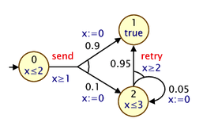

N T Result
4 0 0.0
4 10 4.707364688019771E-6
4 20 1.3126420636755292E-5
5 0 0.0
5 10 3.267731327728599E-6
5 20 8.343575060356386E-6
PRISM Manual version 4.5
Contents
Introduction
Installing PRISM
The PRISM Language
- Introduction
- Example 1
- Model Type
- Modules And Variables
- Commands
- Parallel Composition
- Local Nondeterminism
- CTMCs
- Example 2
- Constants
- Expressions
- Synchronisation
- Module Renaming
- Multiple Initial States
- Global Variables
- Formulas And Labels
- PTAs
- Costs And Rewards
- Process Algebra Operators
- PRISM Model Files
Property Specification
- Introduction
- Identifying A Set Of States
- The P Operator
- The S Operator
- Reward-based Properties
- Non-probabilistic Properties
- Syntax And Semantics
- Filters
- PTA Properties
- Multi-objective Properties
- Properties Files
Running PRISM
- Starting PRISM
- Loading And Building a Model
- Debugging Models With The Simulator
- Exporting The Model
- Model Checking
- Statistical Model Checking
- Computing Steady-state And Transient Probabilities
- Experiments
- Adversaries
- Support For PEPA Models
- Support For SBML
- Explicit Model Import
- Parametric Model Checking
Configuring PRISM
References
Appendices
Introduction
PRISM is a probabilistic model checker, a tool for the modelling and analysis of systems which exhibit probabilistic behaviour. Probabilistic model checking is a formal verification technique. It is based on the construction of a precise mathematical model of a system which is to be analysed. Properties of this system are then expressed formally in temporal logic and automatically analysed against the constructed model.
PRISM has direct support for several types of probabilistic models:
- discrete-time Markov chains (DTMCs),
- continuous-time Markov chains (CTMCs),
- Markov decision processes (MDPs),
- probabilistic timed automata (PTAs).
It also supports probabilistic automata (PAs) [Seg95], but refers to them as MDPs. Models are supplied to the tool by writing descriptions in the PRISM language, a simple, high-level modelling language.
Properties of these models are written in the PRISM property specification language which is based on temporal logic. It incorporates several well-known probabilistic temporal logics:
- PCTL (probabilistic computation tree logic),
- CSL (continuous stochastic logic),
- LTL (linear time logic),
- PCTL* (which subsumes both PCTL and LTL).
plus support for costs/rewards, "quantitative" properties and several other custom features and extensions.
PRISM performs probabilistic model checking, based on exhaustive search and numerical solution, to automatically analyse such properties. It also contains a discrete-event simulation engine for approximate model checking.
Installing PRISM
Instructions
Prerequisites
PRISM is known to run on Linux, Windows and Mac OS X, including 64-bit variants of these operating systems.
You will need Java, version 8 or above. The tool is known to compile and run with both the Oracle and OpenJDK versions of Java. To run binary versions of PRISM, you only need the Java Runtime Environment (JRE), not the full Java Development Kit (JDK).
To compile PRISM from source, you need the Java Development Kit (JDK), GNU make and a C/C++ compiler (e.g. gcc/g++). For compilation under Windows, you will need Cygwin. See below for more information:
- Installation on Windows
- Installation of Linux/Mac binary versions
- Building PRISM from source (non-Windows)
- Building PRISM from source on Windows using Cygwin
- Building PRISM from source on Windows using MSYS
If you are installing on a completely fresh operating system installation (e.g. in a virtual machine), you may find the following scripts useful,
which install the required dependencies and PRISM itself. They can be found in the prism/etc/scripts directory:
- script to build on a clean install of Ubuntu
- script to build on clean install of RHEL/CentOS/etc Linux
Installation on Windows
To install PRISM on Windows, just run the self-extracting installer which you downloaded. You do not need administrator privileges for this, just write-access to the directory chosen for installation.
If requested, the installer will place shortcuts to run PRISM on the desktop and/or start menu. If not, you can run by PRISM double-clicking the file xprism.bat (which may just appear as xprism) in the bin folder of your PRISM folder. If nothing happens, the most likely explanation is that Java is not installed or not in your path. To check, open a command prompt window, navigate to the PRISM directory, type cd bin, then xprism.bat and examine the resulting error. If you want to create shortcuts to xprism.bat manually, you will find some PRISM icons in the etc folder.
If you wish to use the command-line version of PRISM on Windows, open a command prompt window and type for example:
cd "c:\Program Files\prism-4.5-win\bin"
prism ..\examples\dice\dice.pm
prism ..\examples\dice\dice.pm
You can also edit the file bin\prism.bat to allow it to be run from any location. See the instructions within the file for further details.
Problems? See the section "Common Problems And Questions''.
Installation of Linux/Mac binary versions
To ensure compatibility, we recommend that you compile PRISM from source on non-Windows platforms. See below for instructions. However, we do provide pre-compiled binary distributions for Linux and Mac OS X.
To install a binary distribution, unpack the tarred/zipped PRISM distribution into a suitable location, enter the directory and run the install.sh script, e.g.:
gunzip prism-4.5-linux64.tar.gz
tar xf prism-4.5-linux64.tar
cd prism-4.5-linux64
./install.sh
tar xf prism-4.5-linux64.tar
cd prism-4.5-linux64
./install.sh
You do not need to be root to install PRISM. The install script simply makes some small customisations to the scripts used to launch PRISM. The PRISM distribution is self-contained and can be freely moved/renamed, however if you do so you will need to re-run ./install.sh afterwards.
To run PRISM, execute either the xprism or prism script (for the graphical user interface or command-line version, respectively). These can be found in the bin directory. These scripts are designed to be run from anywhere and you can easily create symbolic links or aliases to them. If you want icons to create desktop shortcuts to PRISM, you can find some in the etc directory.
Problems? See the section "Common Problems And Questions''.
Building PRISM from source (non-Windows)
To compile PRISM form source code, you will need:
- GNU make (sometimes called gmake)
- a C/C++ compiler (e.g. gcc/g++)
- a Java Development Kit, version 8 or above
To check that you have the development kit, type javac. If you get an error message that javac cannot be found, you probably do not have the JDK installed (or your path is not set up correctly). To check what version you have, type javac -version.
Hopefully, you can build PRISM simply by entering the PRISM directory and running make, e.g.:
gunzip prism-4.5-src.tar.gz
tar xf prism-4.5-src.tar
cd prism-4.5-src/prism
make
tar xf prism-4.5-src.tar
cd prism-4.5-src/prism
make
For this process to complete correctly, PRISM needs to be able to determine both the operating system you are using and the location of your Java distribution. If there is a problem with either of these, you will see an error message and will need to specify one or both of these manually, such as in these examples:
make OSTYPE=linux
make JAVA_DIR=/usr/java/jdk1.8.0
make OSTYPE=cygwin JAVA_DIR="/cygdrive/c/Program Files/Java/jdk1.8.0"
Note the use of double quotes for the case where the directory contains a space. If you don't know the location of your Java installation, try typing which javac. If the result is e.g. /usr/java/jdk1.8.0/bin/javac then your Java directory is /usr/java/jdk1.8.0. Sometimes javac will be a symbolic link, in which case use "ls -l" to determine the actual location.
It is also possible to to set the environment variables OSTYPE and JAVA_DIR directly or edit their values in the Makefile directly. Note that even when you specify JAVA_DIR explicitly (in either way), PRISM still uses the versions of javac (and javah) that are in your path so make sure this is set up correctly.
64-bit OSs
PRISM should also detect when it is running on a 64-bit architecture, and building will work as above. If this does not work for some reason, you can override detection by setting ARCH to either amd64 (for AMD/Intel 64) or ia64 (for Itanium). For example:
make ARCH=amd64
If you have problems building a 64-bit version of PRISM, one option is to instead compile and run a 32-bit version of PRISM. To do this, you need to:
- Make sure you are using a 32-bit version of Java
- Override detection of the 64-bit architecture when building:
make clean_all
make ARCH=
Problems? See the section "Common Problems And Questions''.
Building PRISM from source on Windows using Cygwin
The compilation of PRISM currently relies on a Unix-like environment. On Windows, this can be achieved using the Cygwin development environment (or alternatively using MSYS - see below). Once Cygwin is installed, first ensure you have the following installed:
makemingw64-i686-gcc-g++(ormingw64-x86_64-gcc-g++for 64-bit Windows)binutilsdos2unix
Then proceed as described in the previous section. Note that the PRISM compilation process uses the MinGW libraries so that the final result is independent of Cygwin at run-time.
One thing to note: make sure you unzip the PRISM distribution from within Cygwin (e.g. using tar xfz prism-XXX-src.tar.gz). Don't use a Windows program (Winzip, etc.) since this can cause problems.
If you use git to checkout the PRISM repository, we recommend that you use the version of git provided by Cygwin. If you use a native Windows version of git, you may want to disable the Unix-to-Windows line-ending conversion, e.g., via
git config --global core.autocrlf false
Problems? See the section "Common Problems And Questions''.
Building PRISM from source on Windows using MSYS
Compiling from source in MSYS is less obvious as this environment is currently not directly supported in the makefile. Additionally, MSYS does not handle symlinks in the same way as cygwin does. The first problem is fixed by providing a OSTYPE variable to the makefile, whereas the second problem currently has to be solved manually.
make OSTYPE=cygwin
At some point it will fail, saying that it cannot find the CUDD library, this is due to the failing symlinks. You can solve this as follows:
cd cudd/
rmdir lib/
./setup.sh
cd ..
make OSTYPE=cygwin
./install.sh
Problems? See the section "Common Problems And Questions''.
Common Problems And Questions
This section describes some of the most common problems and questions related to the installation and running of PRISM. These are grouped into the following categories:
- Running PRISM on Windows
- Running PRISM on non-Windows platforms
- Compiling PRISM
- Other issues
Running PRISM on Windows
When I try to run PRISM on Windows, I double-click the PRISM shortcut but nothing happens.
The most common cause of this is that you either do not have Java installed or the java executable is not in your path. In any case, to determine the exact problem, launch a command shell and navigate to the bin directory inside the directory where you installed PRISM (you can use the "PRISM (console)" shortcut installed in the start menu to do this). Then, type xprism.bat and see what error message is displayed.
When I try to run PRISM on Windows, I get an error of the form:Can't load IA 32-bit .dll on a AMD 64-bit platform
You are probably running a 32-bit Windows binary using a 64-bit version of Java. The version of PRISM (32- or 64-bit) needs to match Java. Either download the 64-bit binary for PRISM, or use a 32-bit version of Java. For the latter case, either make sure the right version of Java is first in your path or update the bin\xprism.bat (or bin\prism.bat) script, giving the full path to javaw at the end of the file.
Running PRISM on non-Windows platforms
When I try to run PRISM, I get an error of the form:Exception in thread "main" java.lang.NoClassDefFoundError: ...
Check:
- Did you run
install.shfrom the PRISM directory? (non-Windows platforms) - If you compiled PRISM from source code, are you sure no errors occurred during the process? To check, go into the PRISM directory, type
make clean_alland then re-compile, checking the output (especially at the end) carefully for any error messages.
When I try to run PRISM, I get an error of the form:java.lang.UnsatisfiedLinkError: no prism in java.library.path
Check:
- Did you run
install.shfrom the PRISM directory? (non-Windows platforms) - If you compiled PRISM from source code, are you sure no errors occurred during the process? To check, go into the PRISM directory, type
make clean_alland then re-compile, checking the output (especially at the end) carefully for any error messages.
Are you on a 64-bit machine? If so, make sure that you are running 64-bit versions of java and javac. (Look for "64-Bit Server VM" in the output of java -version).
When I try to run PRISM, I get an error of the form:java.lang.UnsatisfiedLinkError: ...
Library not loaded: ../../lib/libdd.dylib
Are you running a new version of Mac OS X (notably El Capitan)? This seems to have some problems. A workaround is to change the path to the 'java' executable that runs PRISM. You should find an installation of Java somewhere like this:
/Library/Java/JavaVirtualMachines/jdk1.8.0_60.jdk
(obviously the precise name will depend on the version you have) Try running PRISM with the java executable to be found there, e.g. by running:
PRISM_JAVA=/Library/Java/JavaVirtualMachines/jdk1.8.0_60.jdk/Contents/Home/bin/java prism
or by replacing the value of PRISM_JAVA directly in the prism script directly.
When I try to run PRISM, I get an error of the form:Exception in thread "main" java.lang.UnsupportedClassVersionError: Bad version number in .class file
Your version of Java is too old. Update or install a newer version of Oracle Java and then try again.
When I try to run a (Linux) binary version of PRISM, I get an error saying that libstdc++.so.5 cannot be found or libstdc++.so.6 cannot be found.
This is usually due to a discrepancy between the version of Linux that was used to build the binary distribution and the version that you are using to run it.
If the error message is about libstdc++.so.5, you will just need to install an old version of the libstdc++ library. This should be quite easy to find for most Linux distributions. On Fedora Core, for example, just type: yum install compat-libstdc++-33 as root.
If the error message is about libstdc++.so.6, you are running an older version of Linux than the binary release was compiled for. The easiest solution is to compile PRISM yourself from the source code version instead.
When I try to run PRISM, I get an error of the form:Exception in thread "main" java.lang.ExceptionInInitializerError
at java.lang.Class.initializeClass(libgcj.so.7)
at prism.PrismSettings.<init>(PrismSettings.java:297)
You are not running the Oracle version of Java. You will need to install it.
When I try to run PRISM, I get an error of the form:java.lang.UnsatisfiedLinkError: libprism: ... cannot restore segment prot after reloc: Permission denied
This is likely to be caused by the default settings of SELinux on newer versions of Linux. Open up the "Security Level Configuration" (on Fedora, for example, this is found under "Administration | Security Level and Firewall" under the main menu or by running system-config-securitylevel). Look in the "Compatibility" section of the SELinux Policy settings and make sure "Allow the use of shared libraries with Text Relocation" is ticked. You may need to reboot for changes to take effect.
Do I have to use Oracle's version of Java to build/run PRISM?
Currently, this seems to be the case. We will aim to address this in the future.
Compiling PRISM
When I try to compile PRISM, make seems to get stuck in an infinite loop
This is probably due to the detection of Java failing. Specify the location of your Java directory by hand, e.g. make JAVA_DIR=/usr/java/jdk1.6.0. See the Instructions page for more on this.
When I try to compile PRISM, I get errors of the form:/usr/bin/libtool: for architecture: cputype (16777234) cpusubtype (0) file: -lSystem is not an object file (not allowed in a library)
Are you compiling PRISM on Max OS X? If so, the likely explanation is that you have upgraded to a new version of Mac OS X but have not upgraded the developer tools (eg. XCode). Upgrade and try again.
When I try to compile PRISM, nothing seems to happen
Perhaps you are not using the GNU version of make. Try typing make -v to find out. On some systems, GNU make is called gmake.
When I try to compile PRISM, I get errors of the form:Unexpected end of line seen...
or:make: Fatal error in reader: Makefile, line 58: Unexpected end of line seen...
Perhaps you are not using the GNU version of make. Try typing make -v to find out. On some systems, GNU make is called gmake.
When I try to compile PRISM, I get an error of the form:./setup.sh: line 33: syntax error: unexpected end of file
Are you building on Cygwin? And did you unpack PRISM using WinZip? If so, unpack from Cygwin, using tar xfz (or similar) instead.
When I try to compile PRISM, I get an error of the form:Assembler messages: Fatal error: can't create ../../obj/dd/dd_abstr.o: No such file or directory
Did you unpack PRISM using a graphical tool or file manager? If so, unpack using tar xfz (or similar) instead.
When I try to compile PRISM, I get errors of the form:dirname: extra operand `Files/Java/jdk1.6.0_09/bin/javac' Try `dirname --help' for more information.
This error occurs if the path to your Java distribution contains a space (a common example is when it is somewhere in "Program Files" on Windows). Hopefully, this will be fixed soon. A workaround is to move the java installation to e.g. C:\java.
When I try to compile PRISM, I get an error of the form:/bin/sh: line 43: [: :/cygdrive/c/Program: binary operator expected...
See answer to previous question.
Do I have to use GNU make to build PRISM?
Strictly speaking, no, but you will have to modify the various PRISM Makefiles manually to overcome this.
Can I build PRISM on operating systems other than those currently supported?
PRISM should be suitable for any Unix/Linux variant.
The first thing you will need to do is compile CUDD (the BDD library used by and included in PRISM) on that platform.
Fortunately, CUDD has already been successfully built on a large number of
operating systems. Have a look at the sample Makefiles we provide (i.e. the
files cudd/Makefile.*) which are slight variants of the original Makefile
provided with CUDD (found here: cudd/modified/orig/Makefile). They contain
instructions on how to modify it for various platforms. You can then call
your new modified makefile something appropriate (cudd/Makefile.$OSTYPE) and
proceed to build PRISM as usual. To just build CUDD, not PRISM, type
make cuddpackage instead of make.
Next, look at the main PRISM Makefile, in particular, each place where the
variable $OSTYPE is referred to. Most lines include comments and further
instructions. Once you have done this, proceed as usual.
If you do successfully build PRISM on other platforms, please let us know so we can include this information in future releases. Thanks.
Other issues
How do I uninstall PRISM?
If you installed PRISM on Windows using the self-extracting installer, you can uninstall it using the option on the start menu. If you didn't add these shortcuts, just run uninstall.exe from the directory where you installed PRISM.
For older versions of PRISM on Windows or on any other platform, simply delete the directory containing it.
The only thing that is not removed via either of these methods is the .prism file containing your PRISM settings which is in your home directory (see the section "Configuring PRISM"). You may wish to retain this when upgrading.
I still have a problem installing/running PRISM. What can I do?
Please post a message in the discussion group (see the support section of the PRISM website).
The PRISM Language
Introduction
In order to construct and analyse a model with PRISM, it must be specified in the PRISM language, a simple, state-based language, based on the Reactive Modules formalism of Alur and Henzinger [AH99]. This is used for all of the types of model that PRISM supports: discrete-time Markov chains (DTMCs), continuous-time Markov chains (CTMCs), Markov decision processes (MDPs) and probabilistic timed automata (PTAs). For background material on these models, look at the pointers to resources on the PRISM web site.
In this section, we describe the PRISM language and present a number of small illustrative examples.
A precise definition of the semantics of the language is available from the "Documentation" section of the PRISM web site. One of the best ways to learn what can be done with the PRISM language is to look at some existing examples.
A number of these are included with the tool distribution in the examples directory.
Many additional examples can be found on the "Case Studies" section of the PRISM website.
The fundamental components of the PRISM language are modules and variables. A model is composed of a number of modules which can interact with each other. A module contains a number of local variables. The values of these variables at any given time constitute the state of the module. The global state of the whole model is determined by the local state of all modules. The behaviour of each module is described by a set of commands. A command takes the form:
[] guard -> prob_1 : update_1 + ... + prob_n : update_n;
The guard is a predicate over all the variables in the model (including those belonging to other modules). Each update describes a transition which the module can make if the guard is true. A transition is specified by giving the new values of the variables in the module, possibly as a function of other variables. Each update is also assigned a probability (or in some cases a rate) which will be assigned to the corresponding transition.
Example 1
We will use the following simple example to illustrate the basic concepts of the PRISM language. Consider a system comprising two identical processes which must operate under mutual exclusion. Each process can be in one of 3 states: {0,1,2}. From state 0, a process will move to state 1 with probability 0.2 and remain in the same state with probability 0.8. From state 1, it tries to move to the critical section: state 2. This can only occur if the other process is not in its critical section. Finally, from state 2, a process will either remain there or move back to state 0 with equal probability. The PRISM code to describe an MDP model of this system can be seen below. In the next sections, we explain each aspect of the code in turn.
// Example 1
// Two process mutual exclusion
mdp
module M1
x : [0..2] init 0;
[] x=0 -> 0.8:(x'=0) + 0.2:(x'=1);
[] x=1 & y!=2 -> (x'=2);
[] x=2 -> 0.5:(x'=2) + 0.5:(x'=0);
endmodule
module M2
y : [0..2] init 0;
[] y=0 -> 0.8:(y'=0) + 0.2:(y'=1);
[] y=1 & x!=2 -> (y'=2);
[] y=2 -> 0.5:(y'=2) + 0.5:(y'=0);
endmodule
// Two process mutual exclusion
mdp
module M1
x : [0..2] init 0;
[] x=0 -> 0.8:(x'=0) + 0.2:(x'=1);
[] x=1 & y!=2 -> (x'=2);
[] x=2 -> 0.5:(x'=2) + 0.5:(x'=0);
endmodule
module M2
y : [0..2] init 0;
[] y=0 -> 0.8:(y'=0) + 0.2:(y'=1);
[] y=1 & x!=2 -> (y'=2);
[] y=2 -> 0.5:(y'=2) + 0.5:(y'=0);
endmodule
The PRISM Language: Example 1
Model Type
As mentioned above, the PRISM language can be used to describe several types of probabilistic models:
DTMCs, CTMCs, MDPs and PTAs.
To indicate which type is being described, a PRISM model should include one of the keywords
dtmc, ctmc, mdp or pta.
This is typically at the very start of the file,
but can actually occur anywhere in the file (except inside modules and other declarations).
If no such model type declaration is included, the model is by default assumed to be an MDP.
Note: As mentioned earlier, PRISM also supports probabilistic automata (PAs) [Seg95], but (mis)uses the terminology Markov decision process (MDP) for this model.
Note: For compatibility with old versions of PRISM,
the keywords probabilistic, stochastic and nondeterministic
can be used as alternatives for dtmc, ctmc and mdp, respectively.
Modules And Variables
The previous example uses two modules, M1 and M2, one representing each process.
A module is specified as:
module name ... endmodule
The definition of a module contains two parts: its variables and its commands. The variables describe the possible states that the module can be in; the commands describe its behaviour, i.e. the way in which the state changes over time. Currently, PRISM supports just a few simple types of variables: they can either be (finite ranges of) integers or Booleans (we ignore clocks for now).
In the example above, each module has one integer variable with range [0..2].
A variable declaration looks like:
x : [0..2] init 0;
Notice that the initial value of the variable is also specified. A Boolean variable is declared as follows:
b : bool init false;
It is also possible to omit the initial value of a variable,
in which case it is assumed to be the lowest value in the range (or false for a Boolean).
Thus, the variable declarations shown below are equivalent to the ones above.
As will be described later, it is also possible to specify
multiple initial states for a model.
x : [0..2];
b : bool;
b : bool;
We also mention that, for a few kinds of model analysis (typically those based on simulation, such as approximate model checking or fast adaptive simulation, it is also permissable to use integer variables with unbounded ranges, denoted as:
x : int;
y : int init 3;
y : int init 3;
Where the state space of the model remains finite, despite the presence of such unbounded variables, you can use the explicit engine to build and analyse the model.
Identifiers
The names given to modules and variables are referred to as identifiers.
Identifiers can be made up of letters, digits and the underscore character, but cannot begin with a digit,
i.e. they must satisfy the regular expression [A-Za-z_][A-Za-z0-9_]*, and are case-sensitive.
Furthermore, identifiers cannot be any of the following, which are all reserved keywords in PRISM:
A, bool, clock, const, ctmc, C, double, dtmc, E, endinit, endinvariant, endmodule, endrewards, endsystem, false, formula, filter, func, F, global, G, init, invariant, I, int, label, max, mdp, min, module, X, nondeterministic, Pmax, Pmin, P, probabilistic, prob, pta, rate, rewards, Rmax, Rmin, R, S, stochastic, system, true, U, W.
Commands
The behaviour of each module is described by commands,
comprising a guard and one or more updates.
The first command of module M1 in our example is:
[] x=0 -> 0.8:(x'=0) + 0.2:(x'=1);
The guard x=0 indicates that this describes the behaviour of the module when the variable x has value 0.
The updates (x'=0) and (x'=1) and their associated probabilities state that the value of x will
remain at 0 with probability 0.8 and change to 1 with probability 0.2.
Note that the inclusion of updates in parentheses, e.g. (x'=1), is essential.
While older versions of PRISM did not report the absence of parentheses as an error, newer versions do.
Note also that PRISM will complain if the probabilities on the right hand side of a command do not sum to one.
The second command:
[] x=1 & y!=2 -> (x'=2);
illustrates that guards can contain constraints on any variable, not just the ones in that module,
i.e. the behaviour of one module can depend on the state of another.
Updates, however, can only specify values for variables belonging to the module.
In general a module can read the variables of any other module, but only write to its own.
When a command comprises a single update with probability 1, the 1.0: can be omitted,
as is done in the example above.
If a module has more than one variable, updates describe the new value for each of them.
For example, if it had two variables x1 and x2, a possible command would be:
[] x1=0 & x2>0 & x2<10 -> 0.5:(x1'=1)&(x2'=x2+1) + 0.5:(x1'=2)&(x2'=x2-1);
Notice that elements of the updates are concatenated with & and that each element must be bracketed individually.
If an update does not give a new value for a local variable, it is assumed not to change.
As a special case, the keyword true can be used to denote an update where no variable's value changes, i.e. the following are all equivalent:
[] x1>10 | x2>10 -> (x1'=x1)&(x2'=x2);
[] x1>10 | x2>10 -> (x1'=x1);
[] x1>10 | x2>10 -> true;
[] x1>10 | x2>10 -> (x1'=x1);
[] x1>10 | x2>10 -> true;
Finally, it is important to remember that the expressions on the right hand side of each update refer to the state of the model before the update occurs. So, for example, this command:
[] x1=0 & x2=1 -> (x1'=2)&(x2'=x1)
updates variable x2 to 0, not 2.
Parallel Composition
The probabilistic model corresponding to a PRISM language description is constructed as the parallel composition of its modules. In every state of the model, there is a set of commands (belonging to any of the modules) which are enabled, i.e. whose guards are satisfied in that state. The choice between which command is performed (i.e. the scheduling) depends on the model type.
For an MDP, as in Example 1, the choice is nondeterministic. By way of example, consider state (0,0) (i.e. x=0 and y=0). There are two commands enabled, one from each module:
[] x=0 -> 0.8:(x'=0) + 0.2:(x'=1);
[] y=0 -> 0.8:(y'=0) + 0.2:(y'=1);
In state (0,0) of the MDP, there would be a nondeterministic choice between these two probability distributions:
0.8:(0,0) + 0.2:(1,0)(moduleM1moves)0.8:(0,0) + 0.2:(0,1)(moduleM2moves)
For a DTMC, the choice is probabilistic: each enabled command is selected with equal probability.
If Example 1 was a DTMC, then in state (0,0) of the model
the following probability distribution would result:
0.8:(0,0) + 0.1:(1,0) + 0.1:(0,1)
For a CTMC, as will be discussed shortly, the choice is modelled as a "race" between transitions.
See the later sections on "Synchronisation" and "Process Algebra Operators" for other topics related to parallel composition.
Local Nondeterminism
PRISM models that support nondeterminism, such as are MDPs, can also exhibit local nondeterminism,
which allows the modules themselves to make nondeterministic choices.
In Example 1, we can make the probabilistic choice in the first state of module M1 nondeterministic by replacing the command:
[] x=0 -> 0.8:(x'=0) + 0.2:(x'=1);
with the commands:
[] x=0 -> (x'=0);
[] x=0 -> (x'=1);
[] x=0 -> (x'=1);
Assuming we do the same for module M2, in state (0,0) of the MDP
there will be a nondeterministic choice between the three (trivial) probability distributions listed below. (There are three, not four, distributions because two possibilities result in identical behaviour: staying with probability 1 in the state state.)
1.0:(0,0)1.0:(1,0)1.0:(0,1)
More generally, local nondeterminism can also arise when the guards of two commands overlap only partially, rather than completely as in the example above.
PRISM also permits local nondeterminism in models which are DTMCs, although the nondeterministic choice is randomised when the parallel composition of the modules occurs. Since the appearance of nondeterminism in a DTMC is often the result of a user error in the model specification, PRISM displays a warning when local nondeterminism is detected in a DTMC. Overlapping guards in CTMCs are not treated as nondeterministic choices.
CTMCs
Specifying the behaviour of a continuous-time Markov chain (CTMC) is done in similar fashion to a DTMC or an MDP, as discussed so far. The main difference is that updates in commands are labelled with (positive-valued) rates, rather than probabilities. The notation used in commands, however, to associate rates to transitions is identical to the one used to assign probabilities:
rate_1:update_1 + rate_2:update_2 + ...
In a CTMC, when multiple possible transitions are available in a state, a race condition occurs (see e.g. [KNP07a] for more details). In terms of PRISM commands, this can arise in several ways. Firstly, within in a module, multiple transitions can be specified either as several different updates in a command, or as multiple commands with overlapping guards. The following, for example. are equivalent:
[] x=0 -> 50:(x'=1) + 60:(x'=2);
[] x=0 -> 50:(x'=1);
[] x=0 -> 60:(x'=2);
[] x=0 -> 60:(x'=2);
Furthermore, parallel composition between modules in a CTMC is modelled as a race condition, rather as a nondeterministic choice, like for MDPs.
Example 2
We now introduce a second example: a CTMC that models an N-place queue of jobs and a server which removes jobs from the queue and processes them. The PRISM code is as follows:
// Example 2
// N-place queue + server
ctmc
const int N = 10;
const double mu = 1/10;
const double lambda = 1/2;
const double gamma = 1/3;
module queue
q : [0..N];
[] q<N -> mu:(q'=q+1);
[] q=N -> mu:(q'=q);
[serve] q>0 -> lambda:(q'=q-1);
endmodule
module server
s : [0..1];
[serve] s=0 -> 1:(s'=1);
[] s=1 -> gamma:(s'=0);
endmodule
// N-place queue + server
ctmc
const int N = 10;
const double mu = 1/10;
const double lambda = 1/2;
const double gamma = 1/3;
module queue
q : [0..N];
[] q<N -> mu:(q'=q+1);
[] q=N -> mu:(q'=q);
[serve] q>0 -> lambda:(q'=q-1);
endmodule
module server
s : [0..1];
[serve] s=0 -> 1:(s'=1);
[] s=1 -> gamma:(s'=0);
endmodule
The PRISM Language: Example 2
This example also introduces a number of other PRISM language concepts, including constants, action labels and synchronisation. These are described in the following sections.
Constants
PRISM supports the use of constants, as seen in Example 2.
Constants can be integers, doubles or Booleans
and can be defined using literal values or as constant expressions (including in terms of each other) using the const
keyword. For example:
const int radius = 12;
const double pi = 3.141592;
const double area = pi * radius * radius;
const bool yes = true;
const double pi = 3.141592;
const double area = pi * radius * radius;
const bool yes = true;
The identifiers used for their names are subject to the same rules as variables.
Constants can be used anywhere that a constant value would be expected,
such as the lower or upper range of a variable (e.g. N in Example 2),
the probability or rate associated with an update (mu in Example 2),
or anywhere in a guard or update.
As will be described later constants can also be left undefined
and specified later, either to a single value or a range of values, using experiments.
Note: For the sake of backward-compatibility, the notation used in earlier versions of PRISM
(const for const int and rate or prob for const double) is still supported.
Expressions
The definition of the area constant, in the example above, uses an expression.
We now define more precisely what types of expression are supported by PRISM.
Expressions can contain literal values (12, 3.141592, true, false, etc.),
identifiers (corresponding to variables, constants, etc.) and operators from the following list:
-(unary minus)*,/(multiplication, division)+,-(addition, subtraction)<,<=,>=,>(relational operators)=,!=(equality operators)!(negation)&(conjunction)|(disjunction)<=>(if-and-only-if)=>(implication)?(condition evaluation:condition ? a : bmeans "ifconditionis true thenaelseb")
All of these operators except ? are left associative
(i.e. they are evaluated from left to right).
The precedence of the operators is as found in the list above,
most strongly binding operators first.
Operators on the same line (e.g. + and -) are of equal precedence.
Much of the notation for expressions is hence essentially equivalent to that of C/C++ or Java.
One notable exception to this is that the division operator / always performs floating point, not integer, division,
i.e. the result of 22/7 is 3.142857... not 3.
All expressions must evaluate correctly in terms of type (integer, double or Boolean).
Built-in Functions
Expressions can make use of several built-in functions:
min(...)andmax(...), which select the minimum and maximum value, respectively, of two or more numbers;floor(x)andceil(x), which roundxdown and up, respectively, to the nearest integer;round(x), which roundsxto the nearest integer;pow(x,y)which computesxto the power ofy;mod(i,n)for integer modulo operations;log(x,b), which computes the logarithm ofxto baseb.
Examples of their usage are:
min(x+1, x_max)
max(a,b,c)
floor(13.5)
ceil(13.5)
round(13.5)
pow(2, 8)
pow(9.0, 0.5)
mod(1977, 100)
log(123, 2.71828183)
max(a,b,c)
floor(13.5)
ceil(13.5)
round(13.5)
pow(2, 8)
pow(9.0, 0.5)
mod(1977, 100)
log(123, 2.71828183)
For compatibility with older versions of PRISM, all functions can also be expressed via the func keyword, e.g. func(floor, 13.5).
Use of Expressions
Expressions can be used in a wide range of places in a PRISM language description, e.g.:
- constant definitions
- lower/upper bounds and initial values for variables
- guards
- probabilities/rates
- updates
This allows, for example, the probability in a command to be dependent on the current state:
[] (x>=1 & x<=10) -> x/10 : (x'=max(1,x-1)) + 1-x/10 : (x'=min(10,x+1))
Synchronisation
Another feature of PRISM introduced in Example 2 is synchronisation.
In the style of many process algebras, we allow commands to be labelled with actions.
These are placed inside the square brackets which mark the start of the command,
for example serve in this command from Example 2:
[serve] q>0 -> lambda:(q'=q-1);
These actions can be used to force two or more modules to make transitions simultaneously
(i.e. to synchronise).
For example, in state (3,0) (i.e. q=3 and s=0),
the composed model can move to state (2,1),
synchronising over the serve action.
The rate of this transition is equal to the product of the two individual rates
(in this case, lambda * 1 = lambda).
The product of two rates does not always meaningfully represent the rate of a synchronised transition.
A common technique, as seen here, is to make one action passive, with rate 1 and one action active,
which actually defines the rate for the synchronised transition.
By default, all modules are combined using the standard CSP parallel composition
(i.e. modules synchronise over all their common actions).
Module Renaming
PRISM also supports module renaming, which allows duplication of modules.
In Example 1, module M2 is identical to module M1 so we can in fact replace its entire definition with:
module M2 = M1 [ x=y, y=x ] endmodule
All of the variables in the module being renamed (in this case, just x) must be renamed to new, unused names. Optionally, it is also possible to rename other aspects of the module definition. In fact, the renaming is done at a textual level, so any identifiers (including action labels, constants and functions) used in the module definition can be changed in this way.
Note: Care should be taken when renaming modules that make use of formulas.
Multiple Initial States
Typically, a variable declaration
specifies the initial value for that variable.
The initial state for the model is then defined by the initial value for all variables.
It is possible, however, to specify that a model has multiple initial states.
This is done using the init...endinit construct,
which can be placed anywhere in the file except within a module definition,
and removing any initial values from variable declarations.
Between the init and endinit keywords, there should be a
predicate over all the variables of the model.
Any state which satisfies this predicate is an initial state.
Consider again Example 1.
As it stands, there is a single initial state (0,0) (i.e. x=0 and y=0).
If we remove the init 0 part of both variable declarations
and add the following to the end of the file:
init x=0 endinit
there will be three initial states: (0,0), (0,1) and (0,2).
Similarly, we could instead add:
init x+y=1 endinit
in which case there would be two initial states: (0,1) and (1,0).
Global Variables
In addition to the local variables belonging to each module, a PRISM model can also include global variables, which can be written to, as well as read, by all modules. Like local variables, these can be integers or Booleans. Global variables are declared in identical fashion to a module's local variables, except that the declaration must not be inside the definition of any module. Some example declarations are as follows:
global g : [1..10];
global b : bool init true;
global b : bool init true;
A global variable can be modified by any module and provides another way for modules to interact. An important restriction on the use of global variables is the fact that commands which synchronise with other modules (i.e. those with an action label attached; see the section "Synchronisation") cannot modify global variables. PRISM will detect this and report an error.
Formulas And Labels
PRISM models can include formulas which are used to avoid duplication of code. A formula comprises a name (an identifier) and an expression. The formula name can then be used as shorthand for the expression anywhere an expression might usually be accepted. A formula is defined as follows:
formula num_tokens = q1+q2+q3+q+q5;
It can then be used anywhere within that file, as for example in this command:
[] p1=2 & num_tokens=5 -> (p1'=4);
The effect is exactly as if the following had been typed:
[] p1=2 & (q1+q2+q3+q+q5)=5 -> (p1'=4);
Formulas defined in a model can also be used when specifying its properties.
Formulas and renaming
During parsing of the model, expansion of formulas is done before module renaming so, if a module which uses formulas is renamed to another module, it is the contents of the formula which will be renamed, not the formula itself.
Labels
PRISM models can also contain labels. These are are a way of identifying sets of states that are of particular interest. Labels can only be used when specifying properties but, for convenience, can be defined in model files as well as property files.
Labels differ from formulas in two other ways: firstly, they must be of Boolean type;
secondly, they are written using quotation marks ("..."), as illustrated in the following example:
label "safe" = temp<=100 | alarm=true;
label "fail" = temp>100 & alarm=false;
label "fail" = temp>100 & alarm=false;
PTAs
So far in this section, we have mainly focused on three types of models: DTMCs, MDPs and CTMCs.
PRISM also supports a fourth: probabilistic timed automata (PTAs), which extend MDPs with the ability to model real-time behaviour. This is done in the style of timed automata [AD94], by adding real-valued clocks which increase with time and can be reset. For background material on PTAs, see for example [NPS13].
You can also find several example PTA models included in the PRISM distribution. Look in the examples/pta directory.
Before describing how PTA features are incorporated into the PRISM modelling language, we give a simple example. Here is a small PTA:

and here is a corresponding PRISM model:
pta
module M
s : [0..2] init 0;
x : clock;
invariant
(s=0 => x<=2) &
(s=2 => x<=3)
endinvariant
[send] s=0 & x>=1 -> 0.9:(s'=1)&(x'=0) + 0.1:(s'=2)&(x'=0);
[retry] s=2 & x>=2 -> 0.95:(s'=1) + 0.05:(s'=2)&(x'=0);
endmodule
module M
s : [0..2] init 0;
x : clock;
invariant
(s=0 => x<=2) &
(s=2 => x<=3)
endinvariant
[send] s=0 & x>=1 -> 0.9:(s'=1)&(x'=0) + 0.1:(s'=2)&(x'=0);
[retry] s=2 & x>=2 -> 0.95:(s'=1) + 0.05:(s'=2)&(x'=0);
endmodule
For modelling PTAs in PRISM, there is a new datatype, clock, used for variables that are clocks. These must be local to a particular module, not global. Other types of PRISM variables can be defined in the usual way. In the example above, we use just a single integer variable s to represent the locations of the PTAs.
In a PTA, transitions can include a guard, which constrains when it can occur based on the current value of clocks, and resets, which specify that a clock's values should be set to a new (integer) value. These are both specified in PRISM commands in the usual way: see, for example, the inclusion of x>=1 in the guard for the send-labelled command and the updates of the form (x'=0) which reset the clock x to 0.
The other new addition is an invariant construct, which is used to specify an expression describing the clock invariants for each PRISM module. These impose restrictions on the allowable values of clock variables, depending on the values of the other non-clock variables. The invariant construct should appear between the variable declarations and the commands of the module. Often, clock invariants are described separately for each PTA location; hence, the invariant will often take the form of a conjunction of implications, as in the example model above, but more general expressions are also permitted. In the example, the clock x must satisfy x<=2 or x<=3 when local variables s is 0 or 2, respectively. If s is 1, there is no restriction (since the invariant is effectively true in this case).
Expressions that include reference to clocks, whether in guards or invariants, must satisfy certain conditions to facilitate model checking. In particular, references to clocks must appear as conjunctions of simple clock constraints, i.e. conjunctions of expressions of the form x~c or x~y where x and y are clocks, c is an integer-valued expression and ~ is one of <, <=, >=, >, =).
There are also some additional restrictions imposed on PTA models that are dependent on which of the PTA model checking engines is in use.
For the stochastic games and backwards reachability engines:
- Modules cannot read the local variables of other modules and global variables are not permitted.
- The model must also have a single initial state (i.e. the
init...endinitconstruct is not permitted).
For the digital clocks engine:
- Clock constraints cannot use strict comparison operators, e.g.
x<=5is allowed, butx<5is not. - Diagonal clock constraints are not allowed, i.e. those containing references to two clocks, such as
x<=y.
Finally, PRISM makes several assumptions about PTAs, regardless of the engine used.
- Firstly PTAs should not exhibit timelocks, i.e. the possibility of reaching a state where no transitions are possible and time cannot elapse beyond a certain point (due to invariant conditions). PRISM checks for timelocks and reports an error if one is found.
- Secondly, PTAs should be well-formed and non-zeno (see e.g. [KNSW07] for details). Currently, PRISM does not check automatically that these assumptions are satisfied.
Costs And Rewards
PRISM supports the specification and analysis of properties based on costs and rewards. This means that it can be used to reason, not just about the probability that a model behaves in a certain fashion, but about a wider range of quantitative measures relating to model behaviour. For example, PRISM can be used to compute properties such as "expected time", "expected number of lost messages" or "expected power consumption". The implementation of cost- and reward-based techniques in the tool is only partially completed and is still ongoing. If you have questions, comments or feature-requests relating to this functionality, please feel free to contact the PRISM team about this.
The basic idea is that probabilistic models (of all three types) developed in PRISM can be augmented with costs or rewards: real values associated with certain states or transitions of the model. In fact, since there is no practical distinction between costs and rewards (except that costs are generally perceived to be "bad" and rewards to be "good"), PRISM only supports rewards. The user is, however, free to interpret the values however they choose.
In this section, we describe how models described in the PRISM language
can be augmented with rewards.
Later, we will discuss how to express properties that relate to these rewards.
Rewards are associated with models using rewards ... endrewards constructs,
which can appear anywhere in a model file except within a module definition.
These constructs contains one or more reward items.
Consider the following simple example:
rewards
true : 1;
endrewards
true : 1;
endrewards
This assigns a reward of 1 to every state of the model.
It comprises a single reward item, the left part of which (true) is a guard
and the right part of which (1) is a reward.
States of the model which satisfy the predicate in the guard are assigned the corresponding reward.
More generally, state rewards can be specified using multiple reward items,
each of the form guard : reward;,
where guardis a predicate (over all the variables of the model)
and reward is an expression (containing any variables, constants, etc. from the model).
For example:
rewards
x=0 : 100;
x>0 & x<10 : 2*x;
x=10 : 100;
endrewards
x=0 : 100;
x>0 & x<10 : 2*x;
x=10 : 100;
endrewards
assigns a reward of 100 to states satisfying x=0 or x=10
and a reward of 2*x to states satisfying x>0 & x<10.
Note that a single reward item can assign different rewards to different states,
depending on the values of model variables in each one.
Any states which do not satisfy the guard of any reward item will have no reward assigned to them.
For states which satisfy multiple guards, the reward assigned to the state
is the sum of the rewards for all the corresponding reward items.
Rewards can also be assigned to transitions of a model.
These are specified in a similar fashion to state rewards,
within the rewards ... endrewards construct.
Reward items describing transition rewards are of the form [action] guard : reward;,
the interpretation being that transitions from states which satisfy the guard guard
and are labelled with the action action acquire the reward reward.
For example:
rewards
[] true : 1;
[a] true : x;
[b] true : 2*x;
endrewards
[] true : 1;
[a] true : x;
[b] true : 2*x;
endrewards
assigns a reward of 1 to all transitions in the model with no action label,
and rewards of x and 2*x to all transitions labelled with actions a and b, respectively.
As is the case for states, multiple reward items can specify rewards for a single transition,
in which case the resulting reward is the sum of all the individual rewards.
A model description can specify rewards for both states and transitions.
These are all placed together in a single rewards...endrewards construct.
A PRISM model can have multiple reward structures. Optionally, these can be given labels such as in the following example:
rewards "total_time"
true : 1;
endrewards
rewards "num_failures"
[fail] true : 1;
endrewards
true : 1;
endrewards
rewards "num_failures"
[fail] true : 1;
endrewards
Process Algebra Operators
To make the concept of synchronisation described above more powerful,
PRISM allows you to define precisely the way in which the set of modules are composed in parallel.
This is specified using the system ... endsystem construct,
placed at the end of the model description, which should contain a process-algebraic expression.
This expression should feature each module exactly once, and can use the following (CSP-based) operators:
M1 || M2: alphabetised parallel composition of modulesM1andM2(synchronising on only actions appearing in bothM1andM2)M1 ||| M2: asynchronous parallel composition ofM1andM2(fully interleaved, no synchronisation)M1 |[a,b,...]| M2: restricted parallel composition of modulesM1andM2(synchronising only on actions from the set {a,b,...})M / {a,b,...} : hiding of actions {a,b, ...} in moduleMM {a<-b,c<-d,...} : renaming of actionsatob,ctod, etc. in moduleM.
The first two types of parallel composition (|| and |||) are associative and can be applied to more than two modules at once.
When evaluating the expression, the hiding and renaming operators bind more tightly than the three parallel composition operators.
No other rules of precedence are defined and parentheses should be used to specify the order in which modules are composed.
Some examples of expressions which could be included in the system ... endsystem construct are as follows:
(station1 ||| station2 ||| station3) |[serve]| server((P1 |[a]| P2) / {a}) || Q((P1 |[a]| P2) {a<-b}) |[b]| Q
When no parallel composition is specified by the user,
PRISM implicitly assumes an expression of the form M1 || M2 || ... containing all of the modules in the model.
For a more formal definition of the process algebra operators described above, check the semantics of the PRISM language, available from the "Documentation" section of the PRISM web site.
PRISM is also able to import model descriptions written in (a subset of) the stochastic process algebra PEPA [Hil96].
PRISM Model Files
Files containing model descriptions written in the PRISM language
can contain any amount of white space (spaces, tabs, new lines, etc.),
all of which is ignored when the file is parsed by the tool.
Comments can also be used included in files in the style of the C programming language,
by preceding them with the characters //.
This is illustrated by the PRISM language examples from earlier in this section.
By convention, the file extensions used for PRISM model files vary according to the model type:
.nm(for MDPs or PTAs).pm(for DTMCs).sm(for CTMCs)
but, since new models are added over time, we now recommend that you use:
.prism(for any model type)
Property Specification
Introduction
In order to analyse a probabilistic model which has been specified and constructed in PRISM, it is necessary to identify one or more properties of the model which can be evaluated by the tool. PRISM's property specification language subsumes several well-known probabilistic temporal logics, including PCTL, CSL, probabilistic LTL and PCTL*. PCTL is used for specifying properties of DTMCs, MDPs or PTAs; CSL is an extension of PCTL for CTMCs; LTL and PCTL* can be used to specify properties of DTMCs and MDPs (or untimed properties of CTMCs). PRISM also supports most of the (non-probabilistic) temporal logic CTL.
In fact, PRISM also supports numerous additional customisations and extensions of these two logics. Full details of the property specifications permitted in PRISM are provided in the following sections. The presentation given here is relatively informal. For the precise syntax and semantics of the various logics, see [HJ94],[BdA95] for PCTL, [ASSB96],[BKH99] for CSL and, for example, [Bai98] for LTL and PCTL*. You can also find various pointers to useful papers in the About and Documentation sections of the PRISM website.
Before discussing property specifications in more detail, it is perhaps instructive to first illustrate some typical examples of properties which PRISM can handle. The following are a selection of such properties. In each case, we give both the PRISM syntax and a natural language translation:
P>=1 [ F "terminate" ]
"the algorithm eventually terminates successfully with probability 1"
"P<0.1 [ F<=100 num_errors > 5 ]
"the probability that more than 5 errors occur within the first 100 time units is less than 0.1"
S<0.01 [ num_sensors < min_sensors ]
"in the long-run, the probability that an inadequate number of sensors are operational is less than 0.01"
Note that the above properties are all assertions, i.e. ones to which we would expect a "yes" or "no" answer. This is because all references to probabilities are associated with an upper or lower bound which can be checked to be either true or false. In PRISM, we can also directly specify properties which evaluate to a numerical value, e.g.:
P=? [ !proc2_terminate U proc1_terminate ]
"the probability that process 1 terminates before process 2 does"
Pmax=? [ F<=T messages_lost > 10 ]
"the maximum probability that more than 10 messages have been lost by time T" (for an MDP/PTA)
S=? [ queue_size / max_size > 0.75 ]
"the long-run probability that the queue is more than 75% full"
Furthermore, PRISM makes it easy to combine such properties into more complex expressions, compute their values for a range of parameters and plot graphs of the results using experiments. This is often a very useful way of identifying interesting patterns or trends in the behaviour of a system. See the Case Studies section of the PRISM website for many examples of this kind of analysis.
Identifying A Set Of States
One of the most fundamental tasks when specifying properties of a model is to identify particular sets or classes of states of the model. For example, to verify a property such as "the algorithm eventually terminates successfully with probability 1", it is first necessary to identify the states of the model which correspond to situations where "the algorithm has terminated successfully". In terms of the way temporal logics are usually presented, these correspond to atomic propositions.
In PRISM, this is achieved simply by writing an expression in the PRISM language which evaluates to a Boolean value. This expression will typically contain references to variables (and constants) from the model to which it relates. The set of states corresponding to this expression is those for which it evaluates to true. We say that the expression is "satisfied" in these states.
For example, in the property given above:
P<0.1 [ F<=100 num_errors > 5 ]
the expression num_errors > 5 is used to identify states of the model where more than 5 errors have occurred.
It is also common to use labels to identify states in this way, like "terminate" in the example:
P>=1 [ F "terminate" ]
Properties can refer to labels either from the model to which the property relates, or included in the same properties file.
The P Operator
One of the most important operators in the PRISM property specification language is the P operator, which is used to reason about the probability of an event's occurrence. This operator was originally proposed in the logic PCTL but also features in the other logics supported by PRISM, such as CSL. The P operator is applicable to all types of models supported by PRISM.
Informally, the property:
P bound [ pathprop ]
is true in a state s of a model if
"the probability that path property pathprop is satisfied by the paths from state s
meets the bound bound".
A typical example of a bound would be:
P>0.98 [ pathprop ]
which means: "the probability that pathprop is satisfied by the paths from state s is greater than 0.98". More precisely, bound can be any of >=p, >p, <=p or <p,
where p is a PRISM language expression evaluating to a double in the range [0,1].
The types of path property supported by PRISM and their semantics will be discussed shortly.
Nondeterminism
For models that can exhibit nondeterministic behaviour (MDPs or PTAs), some additional clarifications are necessary. Whereas for fully probabilistic models such as DTMCs and CTMCs, probability measures over paths are well defined (see e.g. [KSK76] and [BKH99], respectively), for nondeterministic models a probability measure can only be feasibly defined once all nondeterminism has been removed.
Hence, the actual meaning of the property P bound [ pathprop ] in these cases is:
"the probability that pathprop is satisfied by the paths from state s
meets the bound bound for all possible resolutions of nondeterminism".
This means that, properties using the P operator then effectively reason about the
minimum or maximum probability, over all possible resolutions of nondeterminism,
that a certain type of behaviour is observed.
This depends on the bound attached to the P operator:
a lower bound (> or >=) relates to minimum probabilities
and an upper bound (< or <=) to maximum probabilities.
Quantitative properties
It is also very often useful to take a quantitative approach to probabilistic model checking, computing the actual probability that some behaviour of a model is observed,
rather than just verifying whether or not the probability is above or below a given bound.
Hence, PRISM allows the P operator to take the following form:
P=? [ pathprop ]
These properties return a numerical rather than a Boolean value. The S and R operators, discussed later, can also be used in this way.
As mentioned above, for nondeterministic models (MDPs or PTAs), either minimum or maximum probability values can be computed. Therefore, in this case, we have two possible types of property:
Pmin=? [ pathprop ]
Pmax=? [ pathprop ]
Pmax=? [ pathprop ]
which return the minimum and maximum probabilities, respectively.
It is also possible to specify to which state the probability returned by a quantitative property refers. This is covered in the later section on filters.
Path properties
PRISM supports a wide range of path properties that can be used with the P operator.
A path property is a formula that evaluates to either true or false for a single path in a model.
Here, we review some of the simpler properties that feature a single temporal operator,
as used for example in the logics PCTL and CSL. Later, we briefly describe how PRISM also supports more complex LTL-style path properties.
The basic different types of path property that can be used inside the P operator are:
X: "next"U: "until"F: "eventually" (sometimes called "future")G: "always" (sometimes called "globally")W: "weak until"R: "release"
In the following sections, we describe each of these temporal operators. We then discuss the (optional) use of time bounds with these operators. Finally, we also discuss LTL-style path properties.
"Next" path properties
The property X prop is true for a path if prop is true in its second state,
An example of this type of property, used inside a P operator, is:
P<0.01 [ X y=1 ]
which is true in a state if "the probability of the expression y=1 being true in the next state is less than 0.01".
"Until" path properties
The property prop1 U prop2 is true for a path if
prop2 is true in some state of the path and prop1 is true in all preceding states.
A simple example of this would be:
P>0.5 [ z<2 U z=2 ]
which is true in a state if "the probability that z is eventually equal to 2, and that z remains less than 2 up until that point, is greater than 0.5".
"Eventually" path properties
The property F prop is true for a path if prop eventually becomes true at some point along the path. The F operator is in fact a special case of the U operator (you will often see F prop written as true U prop). A simple example is:
P<0.1 [ F z>2 ]
which is true in a state if "the probability that z is eventually greater than 2is less than 0.1".
"Globally" path properties
Whereas the F operator is used for "reachability" properties, G represents "invariance". The property G prop is true of a path if prop remains true at all states along the path. Thus, for example:
P>=0.99 [ G z<10 ]
states that, with probability at least 0.99, z never exceeds 10.
"Weak until" and "release" path properties
Like F and G, the operators W and R are derivable from other temporal operators.
Weak until (a W b), which is equivalent to (a U b) | G a, requires that a remains true until b becomes true, but does not require that b ever does becomes true (i.e. a remains true forever). For example, a weak form of the until example used above is:
P>0.5 [ z<2 U z=2 ]
which states that, with probability greater than 0.5, either z is always less than 2, or it is less than 2 until the point where z is 2.
Release (a R b), which is equivalent to !(!a U !b), informally means that b is true until a becomes true, or b is true forever.
"Bounded" variants of path properties
All of the temporal operators given above, with the exception of X, have "bounded" variants, where an additional time bound is imposed on the property being satisfied.
The most common case is to use an upper time bound, i.e. of the form "<=t" or "<t", where t is a PRISM expression evaluating to a constant, non-negative value.
For example, a bounded until property prop1 U<=t prop2, is satisfied along a path if prop2 becomes true within t steps and prop1 is true in all states before that point.
A typical example of this would be:
P>=0.98 [ y<4 U<=7 y=4 ]
which is true in a state if "the probability of y first exceeding 3 within 7 time units is greater than or equal to 0.98". Similarly:
P>=0.98 [ F<=7 y=4 ]
is true in a state if "the probability of y being equal to 4 within 7 time units is greater than or equal to 0.98" and:
P>=0.98 [ G<=7 y=4 ]
is true if the probability of y staying equal to 4 for 7 time units is at least 0.98.
The time bound can be an arbitrary (constant) expression, but note that you may need to bracket it, as in the following example:
P>=0.98 [ G<=(2*k+1) y=4 ]
You can also use lower time-bounds (i.e. >=t or >t) and time intervals [t1,t2], e.g.:
P>=0.98 [ F>=10 y=4 ]
P>=0.98 [ F[10,20] y=4 ]
P>=0.98 [ F[10,20] y=4 ]
which refer to the probability of y becoming equal to 4 after 10 or more time units, and after between 10 and 20 time-units respectively.
For CTMCs, the time bounds can be any (non-negative) numerical values - they are not restricted to integers, as for DTMCs and MDPs. For example:
P>=0.25 [ y<=1 U<=6.5 y>1 ]
means that the probability of y being greater than 1 within 6.5 time-units (and remaining less than or equal to 1 at all preceding time-points) is at least 0.25.
Transient probabilities
We can also use the bounded F operator to refer to a single time instant, e.g.:
P=? [ F[10,10] y=6 ]
or, equivalently:
P=? [ F=10 y=6 ]
both of which give the probability of y being 6 at time instant 10.
LTL-style path properties
PRISM also supports probabilistic model checking of the temporal logic LTL (and, in fact, PCTL*). LTL provides a richer set of path properties for use with the P operator, by permitting temporal operators to be combined. Here are a few examples of properties expressible using this functionality:
P>0.99 [ F ( "request" & (X "ack") ) ]
"with probability greater than 0.99, a request is eventually received, followed immediately by an acknowledgement"
P>=1 [ G F "send" ]
"a message is sent infinitely often with probability 1"
P=? [ F G ("error" & !"repair") ]
"the probability of an error occurring that is never repaired
Note that logical operators have precedence over temporal ones, so you will often need to include parentheses when using logical operators, e.g.:
P=? [ (F "error1") & (F "error2") ]
For temporal operators, unary operators (such as F, G and X) have precedence over binary ones (such as U). Unary operators can be nested, without parentheses, but binary ones cannot.
So, these are allowed:
P=? [ F X X X "a" ]
P=? [ "a" U X X X "error" ]
P=? [ ("a" U "b") U "c" "error" ]
P=? [ "a" U X X X "error" ]
P=? [ ("a" U "b") U "c" "error" ]
but this is not:
P=? [ "a" U "b" U "c" "error" ]
The S Operator
The S operator is used to reason about the steady-state behaviour of a model,
i.e. its behaviour in the long-run or equilibrium.
Although this could in principle relate to all three model types,
PRISM currently only provides support for DTMCs and CTMCs.
The definition of steady-state (long-run) probabilities for finite DTMCS and CTMCs is well defined (see e.g. [Ste94]).
Informally, the property:
S bound [ prop ]
is true in a state s of a DTMC or CTMC if
"starting from s, the steady-state (long-run) probability of being in a state which satisfies the (Boolean-valued) PRISM property prop, meets the bound bound".
A typical example of this type of property would be:
S<0.05 [ queue_size / max_size > 0.75 ]
which means: "the long-run probability of the queue being more than 75% full is less than 0.05".
Like the P operator, the S operator can be used in a quantitative form, which returns the actual probability value, e.g.:
S=? [ queue_size / max_size > 0.75 ]
and can be further customised with the use of filters.
Reward-based Properties
PRISM models can be augmented with information about rewards (or, equivalently, costs).
The tool can analyse properties which relate to the expected values of these rewards.
This is achieved using the R operator, which works in a similar fashion to the
P and S operators, and can be used either in a Boolean-valued query, e.g.:
R bound [ rewardprop ]
where bound takes the form <r, <=r, >r or >=r for an expression r evaluating to a non-negative double,
or a real-valued query, e.g.:
R query [ rewardprop ]
where query is =?, min=? or max=?.
In the latter case, filters can be used, as for the P and S operators.
Informally, "R bound [ rewardprop ]" is true in a state of a model if
"the expected reward associated with rewardprop of the model when starting from that state''
meets the bound bound and "R query [ rewardprop ]" returns the actual expected reward value.
There are various different types of reward properties:
- "reachability reward":
F prop - "co-safe LTL reward": e.g.
F (prop1 & F prop2) - "cumulative reward" :
C<=t - "total reward" :
C - "instantaneous reward" :
I=t - "steady-state reward" :
S.
Below, we consider each of these cases in turn. The descriptions here are kept relatively informal. Precise definitions for most of these can be found in, for example, [KNP07a] (for DTMCs and CTMCs) or [FKNP11] (for MDPs).
"Reachability reward" properties
"Reachability reward" properties associate a reward with each path of a model. More specifically, they refer to the reward accumulated along a path until a certain point is reached. The manner in which rewards are accumulated depends on the model type. For DTMCs and MDPs, the total reward for a path is the sum of the state rewards for each state along the path plus the sum of the transition rewards for each transition between these states. The situation for CTMCs is similar, except that the state reward assigned to each state of the model is interpreted as the rate at which rewards are accumulated in that state, i.e. if t time units are spent in a state with state reward r, the reward accumulated in that state is r x t. Hence, the total reward for a path in a CTMC is the sum of these products for each state along the path plus the sum of the transition rewards for each transition between these states.
The reward property "F prop" corresponds to the reward cumulated along a path
until a state satisfying property prop is reached,
where rewards are cumulated as described above.
State rewards for the prop-satisfying state reached are not included in the cumulated value.
In the case where the probability of reaching a state satisfying prop is less than 1, the reward is equal to infinity.
A common application of this type of property is the case when the rewards associated with the model correspond to time. One can then state, for example:
R<=9.5 [ F z=2 ]
which is true in a state s if "the expected time taken to reach, from s, a state where z equals 2 is less than or equal to 9.5".
"Co-safe LTL reward" properties
These generalise the "reachability" properties above. Again, reward is accumulated along a path up until some point,
but this is specified in a more general way, by giving a formula in the co-safe fragment of linear temporal logic (LTL).
Rewards are accumulated up until the point where the formula is first satisfied. For example, this property, for a DTMC or CTMC,
queries the expected reward accumulated until first goal equals 1 and then subsequently goal equals 2:
R=? [ F (goal=1 & F goal2) ]
and this property, for an MDP, minimises the expected reward until loc equals 1,
having passed only through states where loc never equals 4
Rmin=? [ loc!=4 U loc=1 ]
As for reachability rewards, if the probability of satisfying the formula is less than 1, then the expected reward is defined to be infinite.
Intuitively, a co-safe formula is one that is satisfied within a finite period of time,
and remains true for ever once it becomes true for the first time.
For simplicity, PRISM actually supports the syntactic co-safe fragment of LTL,
which is defined as any LTL formula that only uses the temporal operators F, U and X
(but not G, for example).
PRISM's notation for LTL formulas is described here.
"Cumulative reward" properties
"Cumulative reward" properties also associate a reward with each path of a model,
but only up to a given time bound.
The property C<=t corresponds to the reward cumulated along a path
until t time units have elapsed.
For DTMCs and MDPs, the bound t must evaluate to an integer;
for CTMCs, it can evaluate to double.
State and transition rewards along a path are cumulated exactly as described in the previous section.
A typical application of this type of property is the following. Consider a model of a disk-drive controller which includes a queue of incoming disk requests. If we assign a reward of 1 to each transition of the model corresponding to the situation where an incoming request is lost because the queue is full, then the property:
R=? [ C<=15.5 ]
would return, for a given state of the model, "the expected number of lost requests within 15.5 time units of operation".
"Total reward" properties
"Total reward" properties refer to the accumulation of state and transition rewards in the same way as for "reachability reward" and "cumulative reward" properties, but the rewards is accumulated indefinitely, i.e. the total reward accumulated along the whole (infinite) path. Note that this means that, unless a path ends up remaining forever in states with zero reward, the total reward will be infinite.
Re-using the reward structure in the previous example,
R=? [ C ]
returns "the expected total number of lost requests".
"Instantaneous reward" properties
"Instantaneous reward" properties refer to the reward of a model at a particular instant in time.
The reward property I=t associates with a path the reward in the state
of that path when exactly t time units have elapsed.
For DTMCs and MDPs, the bound t must evaluate to an integer;
for CTMCs, it can evaluate to double.
Returning to our example from the previous section of a model for a disk-request queue in a disk-drive controller, consider the case where the rewards assigned to each state of the model give the current size of the queue in that state. Then, the following property:
R<4.4 [ I=100 ]
would be true in a state s of the model if "starting from s, the expected queue size exactly 100 time units later is less than 4.4". Note that, for this type of reward property, state rewards for CTMCs do not have to refer to rates; they can refer to any instantaneous measure of interest for a state.
"Steady-state reward" properties
Unlike the previous three types of property, "steady-state reward" properties relate not to paths, but rather to the reward in the long-run. A typical application of this type of property would be, in the case where the rewards associated with the model correspond to power consumption, the property:
R<=0.7 [ S ]
which is true in a state s if "starting from s, the long-run average power consumption is less than 0.7".
Which reward structure?
In the case where a PRISM model has multiple reward structures you may need to specify which reward structure your property refers to. This is done by placing the information in braces ({}) after the R operator. You can do so either using the name assigned to a reward structure (if any) or using the index (where 1 means the first rewards structure in the PRISM model file, 2 the second, etc.). Examples are:
R{"num_failures"}=? [ C<=10.0 ]
R{"time"}=? [ F step=final ]
R{2}=? [ F step=final ]
R{"time"}=? [ F step=final ]
R{2}=? [ F step=final ]
Note that when using an index to specify the reward structure, you can actually put any expression that evaluates to an integer. This allows you to, for example, write a property of the form R{c}=?[...] where c is an undefined integer constant. You can then vary the value of c in an experiment and compute values for several different reward structures at once.
If you don't specify a reward structure to the R operator, by default, the first one in the model file is used.
Availability
There are currently a few restrictions on the model checking engines that can be used for some reward properties. The following table summarises the currently availability, where S, M, H and E denote the "sparse", "MTBDD", "hybrid" and "explicit" engines, respectively, for DTMCs, CTMCs and MDPs. For PTAs, support for rewards is currently quite restrictive; see the later section on "PTA properties" for details.
F | cosafe | C<=t | C | I=t | S | |
| DTMCs | SMHE | SMHE | SMHE | SMHE | SMHE | SMH- |
| CTMCs | SMHE | SMHE | SMHE | SMHE | SMHE | SMH- |
| MDPs | SM-E | SMHE | S--E | ---- | SM-E | ---- |
Non-Probabilistic Properties
PRISM also supports model checking of the non-probabilistic temporal logics CTL (computation tree logic) and LTL (linear temporal logic).
Properties in these logics use the A (for all) and E (there exists) operators,
instead of the probabilistic P operator used in many other properties supported by PRISM.
Properties take the form:
A [ pathprop ]
E [ pathprop ]
E [ pathprop ]
which are true in a state s of a model if
"path property pathprop is satisfied by all paths from state s"
and
"path property pathprop is satisfied by some path from state s",
respectively.
The syntax for LTL formulas is the same as those allowed within the P operator.
Example properties include:
E [ F "goal" ] // There exists a path that reaches a state satisfying "goal"
A [ G x<=10 ] // Variable x is always at most 10 along all paths of the model
E [ F "ready" & (X "launch") ] // There exists a path along which label "ready" eventually becomes true and label "launch" is true immediately afterwards
A [ (G F x=1) | (G F x=2) ] // Along all paths, either x=1 or x=2 is true infinitely often
A [ G x<=10 ] // Variable x is always at most 10 along all paths of the model
E [ F "ready" & (X "launch") ] // There exists a path along which label "ready" eventually becomes true and label "launch" is true immediately afterwards
A [ (G F x=1) | (G F x=2) ] // Along all paths, either x=1 or x=2 is true infinitely often
Counterexamples and Witnesses
If you check a CTL property of the form A [ G "inv" ] and it is false, PRISM will generate a counterexample in the form of a path that reaches a state where "inv" is not true. This is displayed either in the simulator (from the GUI) or at the command-line. Similarly, if you check E [ F "goal" ] and the result is true, a witness (a path reaching a "goal" state) will be generated.
Syntax And Semantics
Syntax
The syntax of the PRISM property specification language subsumes various probabilistic temporal logics, including PCTL, CSL, (probabilistic) LTL, PCTL* and CTL. Informally, the syntax can be summarised as follows: a property can be any valid, well-typed PRISM expression, which (optionally) also includes the probabilistic operators discussed previously (P, S and R) and the non-probabilistic (CTL) ones A and E). This mean that any of the following operators can be used:
-(unary minus)*,/(multiplication, division)+,-(addition, subtraction)<,<=,>=,>(relational operators)=,!=(equality operators)!(negation)&(conjunction)|(disjunction)<=>(if-and-only-if)=>(implication)?(condition evaluation:condition ? a : bmeans "ifconditionis true thenaelseb")P(probabilistic operator)S(steady-state operator)R(reward operator)A(for-all operator)E(there-exists operator)
This allows you to write any property expressible in logics such as PCTL and CSL. For example, CSL allows you to nest P and S operators:
P=? [ F>2 S>0.9[ num_servers >= 5 ] ]
"the probability of it taking more than 2 hours to get to a state from which the long-run probability of at least 5 servers being operational is >0.9"
You can also express various arithmetic expressions such as:
1 - P=? [ F[3600,7200] oper ]
"the probability that the system is not operational at any point during the second hour of operation"
R{"oper"}=? [ C<=t ] / t
"the expected fraction of time that the system is available (i.e. the expected interval availability) in the time interval [0, t]"
P=? [ F fail_A ] / P=? [ F any_fail ]
"the (conditional) probability that component A eventually fails, given that at least one component fails"
Semantics
We omit a formal presentation of the semantics of the PRISM property language. The semantics of the probabilistic temporal logics that the language incorporates can be found from a variety of sources. See for example the pointers given in the About and Documentation sections of the PRISM website.
It is worth, however, clarifying a few points specific to PRISM. A property is evaluated with respect to a particular state of a model. Depending on the type of the property, this value may either be a Boolean, an integer or a double. When performing model checking, PRISM usually has to actually compute the value for all states of the model but, for clarity, will by default report just a single value. Typically, this is the value for the (single) initial state of the model. For example, this:
P=? [ F "error" ]
will report the probability, from the initial state of the model, of reaching an "error" state. This:
P>0.5 [ F "error" ]
will return true if and only if the probability, from the initial state, is greater than 0.5.
Note: This is contrast to older versions of PRISM, which treated numerical and Boolean-valued properties differently in this respect.
For models with multiple initial states, we need to adapt these definitions slightly. In this case, the two properties above will yield, respectively:
- the range of values (over all initial states) of the probability of reaching "error"
trueif and only if the probability is greater than 0.5 from all initial states.
You can also ask PRISM to return different values using filters, which are described in the next section.
Filters
As discussed above, when reporting the result of model checking a property, PRISM will by default return the value for the (single) initial state of the model. However, since PRISM in fact usually has to compute values for all states simultaneously, you can customise PRISM properties to obtain different results. This is done using filters.
Filters are created using the filter keyword. They take the following form:
filter(op, prop, states)
where op is the filter operator (see below), prop is any PRISM property and states is a Boolean-valued expression identifying a set of states over which to apply the filter.
In fact, the states argument is optional; if omitted, the filter is applied over all states. So, the following properties are equivalent:
filter(op, prop)
filter(op, prop, true)
filter(op, prop, true)
Here's a simple example of a filter:
filter(max, P=? [ F "error" ], x=0)
This gives the maximum value, starting from any state satisfying x=0, of the probability of reaching an "error" state.
Here's another simple example, which checks whether, starting from any reachable state, we eventually reach a "done" state with probability 1.
filter(forall, P>=1 [ F "done" ])
We could modify this property slightly to instead check whether, from any state that satisfies the label "ready", we eventually reach a "done" state with probability 1. This could be done with either of the following two equivalent properties:
filter(forall, "ready" => P>=1 [ F "done" ])
filter(forall, P>=1 [ F "done" ], "ready")
filter(forall, P>=1 [ F "done" ], "ready")
Note: In older versions of PRISM, the property above could be written just as "ready" => P>=1 [ F "done" ] since the result was checked for all states by default, not just the initial state. Now, you need to explicitly include a filter, as shown above, to achieve this.
Types of filter
Most filters of the form filter(op, prop, states)
apply some operator op to the values of property prop
for all the states satisfying states,
resulting in a single value.
The full list of filter operators op in this category is:
min: the minimum value ofpropover states satisfyingstatesmax: the maximum value ofpropover states satisfyingstatescount: counts the number of states satisfyingstatesfor whichpropis truesum(or+): sums the value ofpropfor states satisfyingstatesavg: the average value ofpropover states satisfyingstatesfirst: the value ofpropfor the first (lowest-indexed) state satisfyingstatesrange: the range (interval) of values ofpropover states satisfyingstatesforall(or&): returnstrueifpropistruefor all states satisfyingstatesexists(or|): returnstrueifpropistruefor some states satisfyingstatesstate: returns the value for the single state satisfyingstates(if there is more than one, this is an error)
There are also a few filters that, rather than returning a single value, return different values for each state, like a normal PRISM property:
argmin: returnstruefor the states satisfyingstatesthat yield the minimum value ofpropargmax: returnstruefor the states satisfyingstatesthat yield the maximum value ofpropprint: does not change the result ofpropbut prints the (non-zero) values to the logprintall: likeprint, but displays all values, even for states where the value is zero
More examples
Here are some further illustrative examples of properties that use filters.
Filters provide a quick way to print the results of a model checking query for several states. In most cases, for example, a P=? query just returns the probability from the initial state. To see the probability for all states satisfying x>2, use:
filter(print, P=? [ ... ], x>2)
Values are printed in the log (i.e. to the "Log" tab in the GUI or to the terminal from the command-line). For small models, you could omit the final states argument (x>2 here) and view the probabilities from all states. You can also use PRISM's verbose mode to view values for all states, but filters provide an easier and more flexible solution.
print filters do not actually alter the result returned so, in the example above, PRISM will still return the probability for the initial state, in addition to printing other probabilities in the log.
You can also use print filters to display lists of states. For example, this property:
filter(print, filter(argmax, P=? [ F "error" ]))
prints the states which have the highest probability of reaching an error state.
However, you should exercise caution when using argmax (or argmin) on properties such as P=? [ ... ] (or S=? [ ... ] or R=? [ ... ]), whose results are only approximate due to the nature of the methods used to compute them (or because of round-off errors.)
Another common use of filters is to display the value for a particular state of the model (rather than the initial state, which is used by default). To achieve this, use e.g.:
filter(state, P=? [ F "error" ], x=2&y=3)
where x=2&y=3 is assumed to specify one particular state.
A state filter will produce an error if the filter expression is not satisfied by exactly one state of the model.
Filters can also be built up into more complex expressions. For example, the following two properties are equivalent:
filter(avg, P=? [ F "error" ], "init")
filter(sum, P=? [ F "error" ], "init") / filter(count, "init")
filter(sum, P=? [ F "error" ], "init") / filter(count, "init")
The range filter, unlike most PRISM expressions which are of type Boolean, integer or double, actually returns an interval: a pair of integers or doubles. For example:
filter(range, P=? [ F count=10 ], count=0)
gives the range of all possible values for the probability of reach a state satisfying count=10, from all states satisfying count=0.
As will be described below, this kind of property also results from the use of old-style ({...}) filters and properties on models with multiple initial states.
Old-style filters
In older versions of PRISM, filters were also available, but in a less expressive form. Previously, they were only usable on P, S or R properties and only a small set of filter operators were permitted. They were also specified in a different way, using braces ({...}). For compatibility with old properties files (and for compactness), these forms of filters are still allowed. These old-style forms of filters:
P=? [ pathprop {states} ]
P=? [ pathprop {states}{min} ]
P=? [ pathprop {states}{max} ]
P=? [ pathprop {states}{min}{max} ]
P=? [ pathprop {states}{min} ]
P=? [ pathprop {states}{max} ]
P=? [ pathprop {states}{min}{max} ]
are equivalent to:
filter(state, P=? [ pathprop ], states)
filter(min, P=? [ pathprop ], states)
filter(max, P=? [ pathprop ], states)
filter(range, P=? [ pathprop ], states)
filter(min, P=? [ pathprop ], states)
filter(max, P=? [ pathprop ], states)
filter(range, P=? [ pathprop ], states)
Notice that the first of the four properties above (i.e. an old-style filter of the form {states} will result in an error if states is not satisfied by exactly one state of the model. Older versions of PRISM just gave you the value for the first state state satisfying the filter, without warning you about this. If you want to recreate the old behaviour, just use a first filter:
filter(first, P=? [ pathprop ], states)
Default filters
Finally, for completeness, we show what the default filters are in PRISM, i.e. how the way that PRISM returns values from properties by default could have been achieved equivalently using filters.
Queries of the form:
P>0.5 [ F "error" ]
are the same as:
filter(forall, P>0.5 [ F "error" ], "init")
and queries of the form:
P=? [ F "error" ]
are the same as either:
filter(state, P=? [ F "error" ], "init")
filter(range, P=? [ F "error" ], "init")
filter(range, P=? [ F "error" ], "init")
for the cases where there the model has a single initial state or multiple initial states, respectively.
PTA Properties
The classes of property that can be checked for PTAs are currently more restricted than for the other kinds of models that PRISM supports. This is because the model checking procedures are quite different for this type of model. We describe these restrictions here. The situation is also dependent on which of the PTA model checking engines is being used.
For the "stochastic games" engine, we essentially only allow unbounded or time-bounded probabilistic reachability properties, i.e. properties of the form:
Pmin=? [ F target ]
Pmax=? [ F target ]
Pmin=? [ F<=T target ]
Pmax=? [ F<=T target ]
Pmax=? [ F target ]
Pmin=? [ F<=T target ]
Pmax=? [ F<=T target ]
where target is a Boolean-valued expression that does not include references to any clock variables and T is an integer-valued expression. The P operator cannot be nested and the S and R operators are not supported.
The "backwards reachability" engine is similar but currently only handles maximum probabilities.
For the "digital clocks" engine, there is slightly more flexibility,
e.g. until (U) properties are allowed, as are clock variables in expressions and arithmetic expressions such as:
1 - Pmin=? [ F target ]
This engine, however, does not yet support time-bounded reachability properties and, like the "stochastic games" engine, does not allowed nested properties. Also, references to clocks must, like in the modelling language, not use strict comparisons
(e.g. x<=5 is allowed, x<5 is not).
The digital clocks also has support for rewards: it is possible to check reachability reward properties of the form:
Rmin=? [ F target ]
Rmax=? [ F target ]
Rmax=? [ F target ]
Reward structures specified in the model, though, must not depend on clock variables. Formally, the class of PTAs with this kind of reward structure is sometime called linearly priced PTAs (see e.g. [KNPS06].
The digital clocks method is based on a language-level translation from a PTA model to an MDP one. If you want to see the MDP PRISM model that was generated, add the switch -exportdigital digital.nm when model checking property to export the model file to digital.nm.
Properties Files
Constants
Files containing properties to be analysed by PRISM can also contain constants, as is the case for model files. These are defined in identical fashion, for example:
const int k = 7;
const double T = 9.5;
const double p = 0.01;
P<p [ F<=T x=k ];
const double T = 9.5;
const double p = 0.01;
P<p [ F<=T x=k ];
As before, these constants can actually be left undefined and then later assigned either a single value or a range of values using experiments.
In fact, values such as the probability bounds for the P or S operators (like P above)
and upper or lower bounds for the U operator (like T above)
can be arbitrary expressions, provided they are constant.
Furthermore, expressions in the properties file can also refer to constants previous defined in the model file.
Labels
Another feature of properties files is labels. These are a way of defining sets of states that will be referred to in properties (they correspond to atomic propositions in a temporal logic setting). As described earlier, labels can be defined in either model files or property files.
Labels are defined using the keyword label, followed by a name (identifier) in double quotes, and then an expression which evaluates to a Boolean. Definition and usage of labels are illustrated in the following example:
label "safe" = temp<=100 | alarm=true;
label "fail" = temp>100 & alarm=false;
P>=0.99 [ "safe" U "fail" ];
label "fail" = temp>100 & alarm=false;
P>=0.99 [ "safe" U "fail" ];
Two special cases are the "init" and "deadlock" labels which are always defined.
These are true in initial states of the model and states where deadlocks were found (and, usually, fixed by adding self-loops), respectively.
Property names
For convenience, properties can be annotated with names, as shown in the following example:
"safe": P<0.01 [ F temperature > t_max ];
which gives the name "safe" to the property. It is then possible to include named properties as sub-expressions of other properties, e.g.:
filter(forall, num_sensors>0 => "safe");
Notice that the syntax for referring to named properties is identical to the syntax for labels. For this reason, property names must be disjoint from those of any existing labels.
You can refer to property names when using the command-line switch -prop to specify which property is to be model checked.
Properties files
A PRISM properties file can contain any number of properties. It is good practice, as shown in the examples above, to terminate each property with a semicolon. Currently, this is not enforced by PRISM (to prevent incompatibility with old properties files) but this may change in the future.
Like model files, properties can also include any amount of white space (spaces, tabs, new lines, etc.) and C-style comments, which are both ignored.
The recommended file extension for PRISM properties is now .props.
Previously, though, the convention was to use extension .pctl for properties of DTMCs, MDPs or PTAs
and extension .csl for properties of CTMCs, so these are still also valid.
Running PRISM
Starting PRISM
There are two versions of PRISM, one based on a graphical user interface (GUI), the other based on a command line interface. Both use the same underlying model checker. The latter is useful for running large batches of jobs, leaving long-running model checking tasks in the background, or simply for running the tool quickly and easily once you are familiar with its operation.
Details how how to run PRISM can be found in the installation instructions. In short, to run the PRISM GUI:
- (on Windows) click the short-cut (to
xprism.bat) installed on the Desktop/Start Menu - (on other OSs) run the
xprismscript in thebindirectory
You can also optionally specify a model file and a properties file to load upon starting the GUI, e.g.:
xprism model.sm
xprism model.sm some-props.csl
xprism model.sm some-props.csl
To use the command-line version of PRISM, run the prism script, also in the bin directory, e.g.:
prism model.sm some-props.csl -prop 2
The remainder of this section of the manual describes the main types of functionality offered by PRISM. For a more introductory guide to using the tool, try the tutorial on the PRISM web site. Some screenshots of the GUI version of PRISM are shown below.

The PRISM GUI (editing a model)

The PRISM GUI (model checking)
Loading And Building a Model
Typically, when using PRISM, the first step is to load a model that has been specified in the PRISM modelling language. If using the GUI, select menu option "Model | Open Model" and choose a file. There are a selection of sample PRISM model files in the examples directory of the distribution.
The model will then be displayed in the editor in the "Model" tab of the GUI window. The file is parsed upon loading. If there are no errors, information about the modules, variables, and other components of the model is displayed in the panel to the left and a green tick will be visible. If there are errors in the file, a red cross will appear instead and the errors will be highlighted in the model editor. To view details of the error, position the mouse pointer over the source of the error (or over the red cross). Alternatively, select menu option "Model | Parse Model" and the error mIessage will be displayed in a message box. Model descriptions can, of course, also be typed from scratch into the GUI's editor.
Building the model
In order to perform model checking, PRISM will (in most cases) need to construct the corresponding probabilistic model, i.e. convert the PRISM model description to, for example, an MDP, DTMC or CTMC. During this process, PRISM computes the set of states in the model which are reachable from the initial states and the transition matrix which represents the model.
Model construction is done automatically when you perform model checking. However, you may always want to explicitly ask PRISM to build the model in order to test for errors or to see how large the model is. From the GUI, you can do this by by selecting "Model | Build Model". If there are no errors during model construction, the number of states and transitions in the model will be displayed in the bottom left corner of the window.
From the command-line, simply type:
prism model.nm
where model.nm is the name of the file containing the model description.
For some types of models, notably PTAs, models are not constructed in this way (because the models are infinite-state). In these cases, analysis of the model is not performed until model checking is performed.
Deadlocks
You should be aware of the possibility of deadlock states (or deadlocks) in the model, i.e. states which are reachable but from which there are no outgoing transitions. PRISM will automatically search your model for deadlocks and, by default, "fix" them by adding self-loops in these states. Since deadlocks are sometimes caused by modelling errors, PRISM will display a warning message in the log when deadlocks are fixed in this way.
You can control whether deadlocks are automatically fixed in this way using the "Automatically fix deadlocks" option (or with command-line switches -nofixdl and -fixdl). When fixing is disabled, PRISM will report and error when the model contains deadlocks (this used to be the default behaviour in older versions of PRISM).
If you have unwanted or unexpected deadlocks in your model, there are several ways you can detect then. Firstly, by disabling deadlock fixing (as described above), PRISM will display a list of deadlock states in the log. Alternatively, you can model check the filter property filter(print, "deadlock"), which has the safe effect.
To find out how deadlocks occur, i.e. which paths through the model lead to a deadlock state, there are several possibilities. Firstly, you can model check the CTL property E[F "deadlock"]. When checked from the GUI, this will provide you with the option of display a path to a deadlock in the simulator. From the command-line, for example with:
prism dice.pm -pf 'E[F "deadlock"]'
a path to a deadlock will be displayed in the log.
Finally, in the eventuality that the model is too large to be model checked, you can still use the simulator to search for deadlocks. This can be done either by manually generating random paths using the simulator in the GUI or, from the command-line, e.g. by running:
prism dice.pm -simpath deadlock stdout
Debugging Models With The Simulator
PRISM includes a simulator, a tool which can be used to generate sample paths (executions) through a PRISM model. From the GUI, the simulator allows you to explore a model by interactively generating such paths. This is particularly useful for debugging models during development and for running sanity checks on completed models. Paths can also be generated from the command-line.
Generating a path in the GUI
Once you have loaded a model into the PRISM GUI (note that it is not necessary to build the model), select the "Simulator" tab at the bottom of the main window. You can now start a new path by double-clicking in the bottom half of the window (or right-clicking and selecting "New path"). If there are undefined constants in the model (or in any currently loaded properties files) you will be prompted to give values for these. You can also specify the state from which you wish to generate a path. By default, this is the initial state of the model.
The main portion of the user interface (the bottom part) displays a path through the currently loaded model. Initially, this will comprise just a single state. The table above shows the list of available transitions from this state. Double-click one of these to extend the path with this transition. The process can be repeated to extend the path in an interactive fashion. Clicking on any state in the current path shows the transition which was taken at this stage. Click on the final state in the path to continue extending the path. Alternatively, clicking the "Simulate" button will select a transition randomly (according to the probabilities/rates of the available transitions). By changing the number in the box below this button, you can easily generate random paths of a given length with a single click. There are also options (in the accompanying drop-down menu) to allow generation of paths up until a particular length or, for CTMCs, in terms of the time taken.
The figure shows the simulator in action.

The PRISM GUI: exploring a model using the simulator
It is also possible to:
- backtrack to an earlier point in a path
- remove all of the states before some point in a path
- restart a path from its first state
- export a path to a text file
Notice that the table containing the path displays not just the value of each variable in each state but also the time spent in that state and any rewards accumulated there. You can configure exactly which columns appear by right-clicking on the path and selecting "Configure view". For rewards (and for CTMC models, for the time-values), you can can opt to display the reward/time for each individual state and/or the cumulative total up until each point in the path.
At the top-right of the interface, any labels contained in the currently loaded model/properties file are displayed, along with their value in the currently selected state of the path. In addition, the built-in labels "init" and "deadlock" are also included. Selecting a label from the list highlights all states in the current path which satisfy it.
The other tabs in this panel allow the value of path operators (taken from properties in the current file) to be viewed for the current path, as well as various other statistics.
Another very useful feature for some models is to use the "Plot new path" option from the simulator, which generates a plot of some/all of the variable/reward values for a particular randomly generated path through the model.
Path generation from the command-line
It is also possible to generate random paths through a model using the command-line version of PRISM. This is achieved using the -simpath switch, which requires two arguments, the first describing the path to be generated and the second specifying the file to which the path should be output (as usual, specifying stdout sends output to the terminal). The following examples illustrate the various ways of generating paths in this way:
prism model.pm -simpath 10 path.txt
prism model.pm -simpath time=7.5 path.txt
prism model.pm -simpath deadlock path.txt
prism model.pm -simpath time=7.5 path.txt
prism model.pm -simpath deadlock path.txt
These generate a path of 10 steps, a path of at least 7.5 time units and a path ending in deadlock, respectively.
Here's an example of the output:
prism poll2.sm -simpath 10 stdout
...
action step time s a s1 s2
- 0 0.0 1 0 0 0
[loop1a] 1 0.007479539729154247 2 0 0 0
[loop2a] 2 0.00782819795294666 1 0 0 0
[loop1a] 3 0.01570585559933703 2 0 0 0
[loop2a] 4 0.017061111948220263 1 0 0 0
[loop1a] 5 0.026816317516034468 2 0 0 0
[loop2a] 6 0.039878416276337814 1 0 0 0
[loop1a] 7 0.04456566315999103 2 0 0 0
[loop2a] 8 0.047368359683643765 1 0 0 0
[loop1a] 9 0.04934857366557349 2 0 0 0
[loop2a] 10 0.055031679365844674 1 0 0 0
...
action step time s a s1 s2
- 0 0.0 1 0 0 0
[loop1a] 1 0.007479539729154247 2 0 0 0
[loop2a] 2 0.00782819795294666 1 0 0 0
[loop1a] 3 0.01570585559933703 2 0 0 0
[loop2a] 4 0.017061111948220263 1 0 0 0
[loop1a] 5 0.026816317516034468 2 0 0 0
[loop2a] 6 0.039878416276337814 1 0 0 0
[loop1a] 7 0.04456566315999103 2 0 0 0
[loop2a] 8 0.047368359683643765 1 0 0 0
[loop1a] 9 0.04934857366557349 2 0 0 0
[loop2a] 10 0.055031679365844674 1 0 0 0
This shows the sequence of states in the path, i.e. the values of the variables in each state. In the example above, there are 4 variables: s, a, s1 and s2.
The first three columns show the type of transition taken to reach that state, its index within the path (starting from 0) and the time at which it was entered. The latter is only shown for continuous time models. The type of the transition is written as [act] if action label act was taken, and as module1 if the module named module1 takes an unlabelled transition).
Further options can also be appended to the first parameter. For example, option probs=true also displays the probability/rate associated with each transition. For example:
prism poll2.sm -simpath '5,probs=true' stdout
...
action probability step time s a s1 s2
- - 0 0.0 1 0 0 0
[loop1a] 200.0 1 0.0011880118081395378 2 0 0 0
[loop2a] 200.0 2 0.0037798355025401888 1 0 0 0
[loop1a] 200.0 3 0.01029212322894221 2 0 0 0
[loop2a] 200.0 4 0.023258883912578403 1 0 0 0
[loop1a] 200.0 5 0.027402404026254504 2 0 0 0
...
action probability step time s a s1 s2
- - 0 0.0 1 0 0 0
[loop1a] 200.0 1 0.0011880118081395378 2 0 0 0
[loop2a] 200.0 2 0.0037798355025401888 1 0 0 0
[loop1a] 200.0 3 0.01029212322894221 2 0 0 0
[loop2a] 200.0 4 0.023258883912578403 1 0 0 0
[loop1a] 200.0 5 0.027402404026254504 2 0 0 0
In this example, the rate is 200.0 for all transitions.
To show the state/transition rewards for each step, use option rewards=true.
If you are only interested in values of certain variables of your model, use the vars=(...) option. For example:
prism poll2.sm -simpath '500,probs=true,vars=(a,s1,s2)' stdout
...
action probability step time a s1 s2
- - 0 0.0 0 0 0
station2 0.5 110 0.5025332771499665 0 0 1
[loop2b] 200.0 111 0.5109407735244359 1 0 1
[serve2] 1.0 112 0.9960642154887506 0 0 0
station1 0.5 130 1.0645858553472822 0 1 0
[loop1b] 200.0 132 1.0732572896618477 1 1 0
[serve1] 1.0 133 2.939742026148121 0 0 0
station2 0.5 225 3.4311507854807677 0 0 1
[loop2b] 200.0 227 3.434285492243098 1 0 1
[serve2] 1.0 228 3.553118276800078 0 0 0
station2 0.5 250 3.6354431222941406 0 0 1
[loop2b] 200.0 251 3.637552738997181 1 0 1
[serve2] 1.0 252 3.7343375346150576 0 0 0
...
action probability step time a s1 s2
- - 0 0.0 0 0 0
station2 0.5 110 0.5025332771499665 0 0 1
[loop2b] 200.0 111 0.5109407735244359 1 0 1
[serve2] 1.0 112 0.9960642154887506 0 0 0
station1 0.5 130 1.0645858553472822 0 1 0
[loop1b] 200.0 132 1.0732572896618477 1 1 0
[serve1] 1.0 133 2.939742026148121 0 0 0
station2 0.5 225 3.4311507854807677 0 0 1
[loop2b] 200.0 227 3.434285492243098 1 0 1
[serve2] 1.0 228 3.553118276800078 0 0 0
station2 0.5 250 3.6354431222941406 0 0 1
[loop2b] 200.0 251 3.637552738997181 1 0 1
[serve2] 1.0 252 3.7343375346150576 0 0 0
Note the use of single quotes around the path description argument to prevent the shell from misinterpreting special characters such as "(".
Notice also that the above only displays states in which the values of some variable of interest changes. This is achieved with the option changes=true, which is automatically enabled when you use vars=(...). If you want to see all steps of the path, add the option changes=false.
An alternative way of viewing paths is to only display paths at certain fixed points in time. This is achieved with the snapshot=x option, where x is the time step. For example:
prism poll2.sm -simpath 'time=5.0,snapshot=0.5' stdout
...
step time s a s1 s2
0 0.0 1 0 0 0
94 0.5 1 0 0 0
198 1.0 1 0 0 0
314 1.5 1 0 0 0
375 2.0 1 1 1 1
376 2.5 2 0 0 1
376 3.0 2 0 0 1
378 3.5 1 0 0 0
378 4.0 1 0 0 0
478 4.5 1 0 0 0
511 5.0 2 0 0 0
...
step time s a s1 s2
0 0.0 1 0 0 0
94 0.5 1 0 0 0
198 1.0 1 0 0 0
314 1.5 1 0 0 0
375 2.0 1 1 1 1
376 2.5 2 0 0 1
376 3.0 2 0 0 1
378 3.5 1 0 0 0
378 4.0 1 0 0 0
478 4.5 1 0 0 0
511 5.0 2 0 0 0
You can also use the sep=... option to specify the column separator. Possible values are space (the default), tab and comma. For example:
prism poll2.sm -simpath '10,vars=(a,b),sep=comma' stdout
...
step,a,b,time
0,0,0,0.0
2,1,0,0.058443536856580006
3,1,1,0.09281024515535738
6,1,2,0.2556555786269585
7,1,3,0.284062896359802
8,1,4,1.1792064236954896
...
step,a,b,time
0,0,0,0.0
2,1,0,0.058443536856580006
3,1,1,0.09281024515535738
6,1,2,0.2556555786269585
7,1,3,0.284062896359802
8,1,4,1.1792064236954896
When generating paths to a deadlock state, additional repeat=... option is available which will construct multiple paths until a deadlock is found. For example:
prism model.sm -simpath 'deadlock,repeat=100' stdout
By default, the simulator detects deterministic loops in paths (e.g. if a path reaches a state from which there is a just a single self-loop leaving that state) and stops generating the path any further. You can disable this behaviour with the loopcheck=false option. For example:
prism dice.pm -simpath 10 stdout
...
Warning: Deterministic loop detected after 6 steps (use loopcheck=false option to extend path).
action step s d
- 0 0 0
die 1 1 0
die 2 4 0
die 3 7 3
die 4 7 3
...
Warning: Deterministic loop detected after 6 steps (use loopcheck=false option to extend path).
action step s d
- 0 0 0
die 1 1 0
die 2 4 0
die 3 7 3
die 4 7 3
prism dice.pm -simpath 10,loopcheck=false stdout
...
action step s d
- 0 0 0
die 1 1 0
die 2 4 0
die 3 7 2
die 4 7 2
die 5 7 2
die 6 7 2
die 7 7 2
die 8 7 2
die 9 7 2
die 10 7 2
...
action step s d
- 0 0 0
die 1 1 0
die 2 4 0
die 3 7 2
die 4 7 2
die 5 7 2
die 6 7 2
die 7 7 2
die 8 7 2
die 9 7 2
die 10 7 2
One final note: the -simpath switch only generates paths up to the maximum path length setting of the simulator (the default is 10,000). If you want to generate longer paths, either change the
default setting or override it temporarily from the command-line using the -simpathlen switch.
You might also use the latter to decrease the setting,
e.g. to look for a path leading to a deadlock state,
but only within 100 steps:
prism model.sm -simpath deadlock stdout -simpathlen 100
Exporting The Model
If required, once the model has been constructed, it can be exported, either for manual examination or for use in another tool. The following can all be exported:
- the set of reachable states;
- the transition matrix;
- the state rewards vector(s);
- the transition rewards matrix (or matrices).
- labels (in the model or properties) and the states that satisfy them
Note that the last of these also provides a way to export information about initial states and deadlock states (via the built-in labels "init" and "deadlock").
From the GUI, use the "Model | Export" menu to export the data to a file or, for small models, use the "Model | View" menu to print the details directly to the log. For the case of labels, if you want to export labels from the properties file too, use the "Properties | Export labels" option, rather than the "Model | Export" one.
From the command-line version of PRISM, use the following switches:
-exportstates <file>-exporttrans <file>-exportstaterewards <file>-exporttransrewards <file>-exportlabels <file>
or, as explained below, use the more convenient switch:
-exportmodel <files[:options]>
Replace <file> with stdout in any of the above to print the information to the terminal.
The export command-line switches can be used in combination. For example:
prism poll2.sm -exportstates poll2.sta -exporttrans poll2.tra
exports both the state space and transition matrix. You can export both state and transition rewards using the -exportrewards switch. The following are equivalent:
prism poll2.sm -exportrewards poll2.rews poll2.rewt
prism poll2.sm -exportstaterewards poll2.rews -exporttransrewards poll2.rewt
prism poll2.sm -exportstaterewards poll2.rews -exporttransrewards poll2.rewt
When there are multiple reward structures, a separate file is created for each one and a (1-indexed) suffix is added to distinguish them.
You can also easily perform multiple exports simultaneously using the -exportmodel switch, which specifies multiple files using a list of extensions. The file extensions then dictate what is exported. For example:
prism poll2.sm -exportmodel out.tra,sta
exports the transition matrix and states list to out.tra and out.sta, respectively. If you omit the file basename (out in this case), then the basename of the model file (poll2 in this case) is used. For example:
prism poll2.sm -exportmodel .tra,sta
exports the transition matrix and states list to poll2.tra and poll2.sta.
Possible file extensions are:
.sta (reachable states),
.tra (transition matrix),
.srew (state rewards),
.trew (transition rewards),
.lab (labels).
You can use the shorthand .all to export everything, and .rew to export both state and transition rewards. For example:
prism poll2.sm -exportmodel out.all
prism poll2.sm -exportmodel .all
prism poll2.sm -exportmodel .all
creates multiple files of the form out.* or poll2.*, respectively.
As mentioned above, you can always use stdout instead of a filename. For example:
prism poll2.sm -exportmodel stdout.all
is a quick way to print all details (of a small model) to the terminal.
Although is not exported when using .all, the -exportmodel switch can also be used to export the transition matrix
in Dot format which allows easy graphical visualisation of the model:
prism poll2.sm -exportmodel poll2.dot
Finally, the -exportmodel switch can be passed various options. The general form is -exportmodel files:options where options is a comma-separated list of options taken from the following list:
mrmc- export data in MRMC formatmatlab- export data in Matlab formatrows- export matrices with one row/distribution on each lineordered- output states indices in ascending order [default]unordered- don't output states indices in ascending order
An example is:
prism poll2.sm -exportmodel out.tra,out.trew:matlab,unordered
The meaning of these options is described below.
File formats
By default, model data is exported (or displayed) in plain text format. The precise details of the formats used can be found in the "Explicit Model Files" appendix.
As mentioned above, by convention, we use file extensions
.sta (for states files), .tra (for transitions files),
.rews and .rewt (for state/transition rewards files)
and .lab (for labels).
Alternatively, it is possible to export this information as Matlab code
(a .m file) or in a format suitable for import into the MRMC tool. Select the appropriate menu item when using the GUI, or add the command-line switches:
-exportmatlab-exportmrmc
or, as described earlier, pass options to the -exportmodel switch.
There is no specific MRMC format for labels, so these are exported as plain text in this case.
There is some additional export functionality available only from the command-line.
Firstly, when outputting matrices for DTMCs or CTMCs, it is possible to request that PRISM does not sort the rows of the matrix, as is normally the case. This is achieved with the switch:
-exportunordered
The reason for this is that in this case PRISM does not need to construct an explicit version of the model in memory and the process can thus be performed with reduced memory consumption.
Secondly, there is a switch:
-exportrows
which provides an alternative output format for transition matrices where the elements of each row of the matrix (i.e. the transitions from a state/choice) are grouped on the same line. This can be particularly helpful for viewing the matrix for MDPs. The file format is shown here.
Graphical model export
The transition matrix of the model can also be exported in Dot format, which allows easy graphical visualisation of the graph structure of the model. You can optionally request that state descriptions are added to each state of graph; if not, states are labelled with integer indices that can be cross-referenced with the list of reachable states.
Use the menu entries under "Model | Export | Transition matrix" from the GUI or command-line switches:
-exporttransdot <file>-exporttransdotstates <file>
As mentioned above, for the latter, the following is equivalent (and easier to remember):
prism poll2.sm -exportmodel poll2.dot
Exporting (B)SCCs and end components
It is also possible to export the set of (bottom) strongly connected components (SCCs or BSCCs) for a model. This can only be done from the command-line currently. Use, for example:
prism poll2.sm -exportsccs stdout
prism poll2.sm -exportbsccs stdout
prism poll2.sm -exportbsccs stdout
For an MDP, you can also export the set of maximal end components (MECs):
prism mdp.nm -exportmecs stdout
Model Checking
Typically, once a model has been constructed, it is analysed through model checking.
Properties are specified as described in the "Property Specification" section,
and are usually kept in files with extensions .props, .pctl or .csl.
There are properties files accompanying most of the sample PRISM models in the examples directory.
GUI
To load a file containing properties into the GUI, select menu option "Properties | Open properties list". The file can only be loaded if there are no errors, otherwise an error is displayed. Note that it may be necessary to have loaded the corresponding model first, since the properties will probably make reference to variables (and perhaps constants) declared in the model file. Once loaded, the properties contained in the file are displayed in a list in the "Properties" tab of the GUI. Constants and labels are displayed in separate lists below. You can modify or create new properties, constants and labels from the GUI, by right-clicking on the appropriate list and selecting from the pop-up menu which appears. Properties with errors are shaded red and marked with a warning sign. Positioning the mouse pointer over the property displays the corresponding error message.
The pop-up menu for the properties list also contains a "Verify" option,
which allows you instruct PRISM to model check the currently selected properties
(hold down Ctrl/Cmd to select more than one property simultaneously).
All properties can be model checked at once by selecting "Verify all".
PRISM verifies each property individually.
Upon completion, the icon next to the property changes according to the result of model checking. For Boolean-valued properties, a result of true or false is indicated by a green tick or red cross, respectively. For properties which have a numerical result (e.g. P=? [ ...]), position the mouse pointer over the property to view the result.
In addition, this and further information about model checking is displayed in the log in the "Log" tab.
Command-line
From the command-line, model checking is achieved by passing both a model file and a properties file as arguments, e.g.:
prism poll2.sm poll.csl
The results of model checking are sent to the display and are as described above for the GUI version.
By default, all properties in the file are checked.
To model check only a single property, use the -prop switch.
For example, to check only the fourth property in the file:
prism poll2.sm poll.csl -prop 4
or to check only the property with name "safe" in the file:
prism poll2.sm poll.csl -prop safe
Alternatively, the contents of a properties file can be specified directly from the command-line, using the -pf switch:
prism poll2.sm -pf 'P>=0.5 [ true U<=5 (s=1 & a=0) ]'
The switches -pctl and -csl are aliases for -pf.
Note the use of single quotes ('...') to avoid characters such as
( and > being interpreted by the command-line shell.
Single quotes are preferable to double quotes since PRISM properties often include double quotes, e.g. for references to labels or properties.
Approximate Model Checking
The discrete-event simulator built into PRISM (see the section "Debugging Models With The Simulator") can also be used to generate approximate results for PRISM properties, a technique often called statistical model checking. Essentially, this is achieved by sampling: generating a large number of random paths through the model, evaluating the result of the given properties on each run, and using this information to generate an approximately correct result. This approach is particularly useful on very large models when normal model checking is infeasible. This is because discrete-event simulation is performed using the PRISM language model description, without explicitly constructing the corresponding probabilistic model.
Currently, statistical model checking can only be applied to P or R operators
and does not support LTL-style path properties or filters.
There are also a few restrictions on the modelling language features that can be used; see below for details.
To use this functionality, load a model and some properties into PRISM, as described in the previous sections. To generate an approximate value for one or more properties, select them in the list, right-click and select "Simulate" (as opposed to "Verify"). As usual, it is first necessary to provide values for any undefined constants. Subsequently, a dialog appears. Here, the state from which approximate values are to be computed (i.e. from which the paths will be generated) can be selected. By default, this is the initial state of the model. The other settings in the dialog concern the methods used for simulation.
PRISM supports four different methods for performing statistical model checking:
- CI (Confidence Interval)
- ACI (Asymptotic Confidence Interval)
- APMC (Approximate Probabilistic Model Checking)
- SPRT (Sequential Probability Ratio Test)
The first three of these are intended primarily for "quantitative" properties (e.g. of the form P=?[...]), but can also be used for "bounded" properties (e.g. of the form P<p[...]). The SPRT method is only applicable to "bounded" properties.
Each method has several parameters that control its execution, i.e. the number of samples that are generated and the accuracy of the computed approximation. In most cases, these parameters are inter-related so one of them must be left unspecified and its value computed automatically based on the others. In some cases, this is done before simulation; in others, it must be done afterwards.
Below, we describe each method in more detail.
For simplicity, we describe the case of checking a P operator.
Details for the case of an R operator can be found in [Nim10].
CI (Confidence Interval) Method
The CI method gives a confidence interval for the approximate value generated for a P=? property, based on a given confidence level and the number of samples generated.
The parameters of the method are:
- "Width" (w)
- "Confidence" (alpha)
- "Number of samples" (N)
Let X denote the true result of the query P=?[...] and Y the approximation generated.
The confidence interval is [Y-w,Y+w], i.e. w gives the half-width of the interval.
The confidence level, which is usually stated as a percentage, is 100(1-alpha)%.
This means that the actual value X should fall into the confidence interval [Y-w,Y+w] 100(1-alpha)% of the time.
To determine, for example, the width w for given alpha and N, we use w = q * sqrt(v / N) where q is a quantile, for probability 1-alpha/2, from the Student's t-distribution with N-1 degrees of freedom and v is (an estimation of) the variance for X. Similarly, we can determine the required number of iterations, from w and alpha, as N = (v * q2)/w2, where q and v are as before.
For a bounded property P~p[...], the (Boolean) result is determined according to the generated approximation for the probability. This is not the case, however, if the threshold p falls within the confidence interval [Y-w,Y+w], in which case no value is returned.
ACI (Asymptotic Confidence Interval) Method
The ACI method works in exactly same fashion as the CI method, except that it uses the Normal distribution to approximate the Student's t-distribution when determining the confidence interval. This is appropriate when the number of samples is large (because we can get a reliable estimation of the variance from the samples) but may be less accurate for small numbers of samples.
APMC (Approximate Probabilistic Model Checking) Method
The APMC method, based on [HLMP04], offers a probabilistic guarantee on the accuracy of the approximate value generated for a P=? property, based on the Chernoff-Hoeffding bound.
The parameters of the method are:
- "Approximation" (epsilon)
- "Confidence" (delta)
- "Number of samples" (N)
Letting X denote the true result of the query P=?[...] and Y the approximation generated, we have:
- Prob(|Y-X| > epsilon) < delta
where the parameters are related as follows: N = ln(2/delta) / 2epsilon2. This imposes certain restrictions on the parameters, namely that N(epsilon2) ≥ ln(2)/2.
In similar fashion to the CI/ACI methods, the APMC method can be also be used for bounded properties such as P~p[...], as long as the threshold p falls outside the interval [Y-epsilon,Y+epsilon].
SPRT (Sequential Probability Ratio Test) Method
The SPRT method is specifically for bounded properties, such as P~p[...] and is based on acceptance sampling techniques [YS02]. It uses Wald's sequential probability ratio test (SPRT), which generates a succession of samples, deciding on-the-fly when an answer can be given with a sufficiently high confidence.
The parameters of the method are:
- "Indifference" (delta)
- "Type I/II error" (alpha/beta)
Consider a property of the form P≥p[...]. The parameter delta is used as the half-width of an indifference region [p-delta,p+delta]. PRISM will attempt to determine whether either the hypothesis P≥(p+delta)[...] or P≤(p-delta)[...] is true, based on which it will return either true or false, respectively. The parameters alpha and beta represent the probability of the occurrence of a type I error (wrongly accepting the first hypothesis) and a type II error (wrongly accepting the second hypothesis), respectively. For simplicity, PRISM assigns the same value to both alpha and beta.
Maximum Path Length
Another setting that can be configured from the "Simulation Parameters" dialog is the maximum length of paths generated by PRISM during statistical model checking. In order to perform statistical model checking, PRISM needs to evaluate the property being checked along every generated path. For example, when checking P=? [ F<=10 "end" ], PRISM must check whether F<=10 "end" is true for each path. On this example (assuming a discrete-time model), this can always be done within the first 10 steps. For a property such as P=? [ F "end" ], however, there may be paths along which no finite fragment can show F "end" to be true or false. So, PRISM imposes a maximum path length to avoid the need to generate excessively long (or infinite) paths.
The default maximum length is 10,000 steps.
If, for a given property, statistical model checking results in one or more paths on which the property can be evaluated, an error is reported.
Command-line Statistical Model Checking
Statistical model checking can also be enabled from the command-line version of PRISM, by including the -sim switch. The default methods used are CI (Confidence Interval) for "quantitative" properties and SPRT (Sequential Probability Ratio Test) for "bounded" properties. To select a particular method, use switch -simmethod <method> where <method> is one of ci, aci, apmc and sprt. For example:
prism model.pm model.pctl -prop 1 -sim -simmethod aci
PRISM has default values for the various simulation method parameters, but these can also be specified using the switches -simsamples, -simconf, -simwidth and -simapprox. The exact meaning of these switches for each simulation method is given in the table below.
| CI | ACI | APMC | SPRT | |
-simsamples | "Num. samples" | "Num. samples" | "Num. samples" | n/a |
-simconf | "Confidence" | "Confidence" | "Confidence" | "Type I/II error" |
-simwidth | "Width" | "Width" | n/a | "Indifference" |
-simapprox | n/a | n/a | "Approximation" | n/a |
The maximum length of simulation paths is set with switch -simpathlen.
Limitations
Currently, the simulator does not support every part of the PRISM modelling languages. For example, it does not handle models with multiple initial states or with system...endsystem definitions.
It is also worth pointing out that statistical model checking techniques are not well suited to models that exhibit nondeterminism, such as MDPs. This because the techniques rely on generation of random paths, which are not well defined for a MDP. PRISM does allow statistical model checking to be performed on an MDP, but does so by simply resolving nondeterministic choices in a (uniformly) random fashion (and displaying a warning message). Currently PTAs are not supported by the simulator.
Computing Steady-state And Transient Probabilities
If the model is a CTMC or DTMC, it is possible to compute corresponding vectors of
steady-state or transient probabilities directly
(rather than indirectly by analysing a property which requires their computation).
From the GUI, select an option from the "Model | Compute" menu.
For transient probabilities, you will be asked to supply the
time value for which you wish to compute probabilities.
From the command-line, add the -steadystate (or -ss) switch:
prism poll2.sm -ss
for steady-state probabilities or the -transient (or -tr) switch:
prism poll2.sm -tr 2.0
for transient probabilities, again specifying a time value in the latter case. The probabilities are computed for all states of the model and displayed, either on the screen (from the command-line) or in the log (from the GUI).
To instead export the vector of computed probabilities to a file, use the "Model | Compute/export" option from the GUI, or the -exportsteadystate (or -exportss) and -exporttransient (or -exporttr) switches from the command-line:
prism poll2.sm -ss -exportss poll2-ss.txt
prism poll2.sm -tr 2.0 -exporttr poll2-tr2.txt
prism poll2.sm -tr 2.0 -exporttr poll2-tr2.txt
From the command-line, you can request that the probability vectors exported are in Matlab format by adding the -exportmatlab switch.
Initial probability distributions
By default, for both steady-state and transient probability computation,
PRISM assumes that the initial probability distribution of the model is
an equiprobable choice over the set of initial states.
You can override this and provide a specific initial distribution. This is done using the -importinitdist switch. The format for this imported distribution is identical to the ones exported by PRISM, i.e. simply a list of probabilities for all states separated by new lines. For example, this:
prism poll2.sm -tr 1.0 -exporttr poll2-tr1.txt
prism poll2.sm -tr 1.0 -importinitdist poll2-tr1.txt -exporttr poll2-tr2.txt
prism poll2.sm -tr 1.0 -importinitdist poll2-tr1.txt -exporttr poll2-tr2.txt
is (essentially) equivalent to this:
prism poll2.sm -tr 2.0 -exporttr poll2-tr2.txt
Ranges of time values
Finally, you can compute transient probabilities for a range of time values, e.g.:
prism poll2.sm -tr 0.1:0.01:0.2
which computes transient probabilities for the time points 0.1, 0.11, 0.12, .., 0.2. In this case, the computation is done incrementally, with probabilities for each time point being computed from the previous point for efficiency.
Experiments
PRISM supports experiments, which is a way of automating multiple instances of model checking. This is done by leaving one or more constants undefined, e.g.:
const int N;
const double T;
const double T;
This can be done for constants in the model file, the properties file, or both.
Before any verification can be performed, values must be provided for any such constants. In the GUI, a dialog appears in which the user is required to enter values. From the command line, the -const switch must be used, e.g.:
prism cluster.sm cluster.csl -const N=4,T=85.9
To run an experiment, provide a range of values for one or more of the constants. Model checking will be performed for all combinations of the constant values provided. For example:
prism cluster.sm cluster.csl -const N=4:6,T=60:10:100
where N=4:6 means that values of 4,5 and 6 are used for N,
and T=60:10:100 means that values of 60, 70, 80, 90 and 100 (i.e. steps of 10) are used for T.
For convenience, constant specifications can be split across separate instances of the -const switch, if desired.
You can also specify double-valued constants as fractions rather than decimals. For example:
prism cluster.sm cluster.csl -const N=4,T=85.9 -const p=1/3
From the GUI, the same thing can be achieved by selecting a single property, right clicking on it and selecting "New experiment" (or alternatively using the popup menu in the "Experiments" panel). Values or ranges for each undefined constant can then be supplied in the resulting dialog. Details of the new experiment and its progress are shown in the panel. To stop the experiment before it has completed, click the red "Stop" button and it will halt after finishing the current iteration of model checking. Once the experiment has finished, right clicking on the experiment produces a pop-up menu, from which you can view the results of the experiment or export them to a file.
For experiments based on properties which return numerical results, you can also use the GUI to plot graphs of the results. This can be done either before the experiment starts, by selecting the "Create graph" tick-box in the dialog used to create the experiment (in fact this box is ticked by default), or after the experiment's completion, by choosing "Plot results" from the pop-up menu on the experiment. A dialog appears, where you can choose which constant (if there are more than one) to use for the x-axis of the graph, and for which values of any other constants the results should be plotted. The graph will appear in the panel below the list of experiments. Right clicking on a graph and selecting "Graph options" brings up a dialog from which many properties of the graph can be configured. From the pop-up menu of a graph, you can also choose to print the graph (to a printer or Postscript file) or export it in a variety of formats: as an image (PNG or JPEG), as an encapsulated Postscript file (EPS), in an XML-based format (for reloading back into PRISM), or as code which can be used to generate the graph in Matlab.
Approximate computation of quantitive results obtained with the simulator can also be used on experiments. In the GUI, select the "Use Simulation" option when defining the parameters for the experiment. From the command-line, just add the -sim switch as usual.
Exporting results
You can export all the results from an experiment to a file or to the screen. From the command-line, use the -exportresults switch, for example:
prism cluster.sm cluster.csl -prop 4 -const N=4:5,T=0:10:20 -exportresults res.txt
to send to output file res.txt, or:
prism cluster.sm cluster.csl -prop 4 -const N=4:5,T=0:10:20 -exportresults stdout
to send the results straight to the screen. From the GUI, right click on the experiment and select "Export results".
The default behaviour is to export a list of results in text form, using tabs to separate items. The above examples produce:
You can change the format in which the results are exported by appending one or more comma-separated options to the end of the -exportresults switch, for example to export in CSV (comma-separated values) format:
prism cluster.sm cluster.csl -prop 4 -const N=4:5,T=0:10:20 -exportresults res.txt:csv
N, T, Result
4, 0, 0.0
4, 10, 4.707364688019771E-6
4, 20, 1.3126420636755292E-5
5, 0, 0.0
5, 10, 3.267731327728599E-6
5, 20, 8.343575060356386E-6
4, 0, 0.0
4, 10, 4.707364688019771E-6
4, 20, 1.3126420636755292E-5
5, 0, 0.0
5, 10, 3.267731327728599E-6
5, 20, 8.343575060356386E-6
You can also add the matrix option, to export the results as one or more 2D matrices, rather than a list.
This is particularly useful if you want to create a surface plot from results that vary over two constants.
prism cluster.sm cluster.csl -prop 4 -const N=4:5,T=0:10:20 -exportresults res.txt:csv,matrix
"N\T"
, 0.0, 10.0, 20.0
4, 0.0, 4.707364688019771E-6, 1.3126420636755292E-5
5, 0.0, 3.267731327728599E-6, 8.343575060356386E-6
, 0.0, 10.0, 20.0
4, 0.0, 4.707364688019771E-6, 1.3126420636755292E-5
5, 0.0, 3.267731327728599E-6, 8.343575060356386E-6
The matrix option is also available in normal (non-CSV) mode.
Finally, you can export results in the form of comments, used by PRISM's functionality:
prism cluster.sm cluster.csl -prop 4 -const N=4:5,T=0:10:20 -exportresults res.txt:comment
// RESULT (N=4,T=0): 0.0
// RESULT (N=4,T=10): 4.707364688019771E-6
// RESULT (N=4,T=20): 1.3126420636755292E-5
// RESULT (N=5,T=0): 0.0
// RESULT (N=5,T=10): 3.267731327728599E-6
// RESULT (N=5,T=20): 8.343575060356386E-6
// RESULT (N=4,T=10): 4.707364688019771E-6
// RESULT (N=4,T=20): 1.3126420636755292E-5
// RESULT (N=5,T=0): 0.0
// RESULT (N=5,T=10): 3.267731327728599E-6
// RESULT (N=5,T=20): 8.343575060356386E-6
Adversaries
When model checking some properties of MDPs, PRISM can also generate an optimal adversary, i.e. one which corresponds to either the minimum or maximum values of the probabilities or rewards computed during verification. Recall that, for MDPs, PRISM quantifies over all possible adversaries, i.e. all possible resolutions of nondeterminism in the model. A typical property would be:
Pmax=? [ F "error" ]
which computes the maximum probability, over all adversaries, of reaching a state satisfying the label "error", from all states of the model. When under the control of a specific adversary, the behaviour of an MDP is purely probabilistic, yielding a single value (for each state) for the probability of reaching "error". In addition to giving the maximum probability value(s), PRISM can produce an adversary of the MDP for which the probabilities (for each state) coincide with the maximum values.
For a probabilistic reachability property, such as the one above, a memoryless adversary suffices, that is one which always makes the same choice in any given state of the model. So, the default form in which PRISM provides an adversary is a DTMC derived by retaining only a single nondeterministic choice in each state of the MDP. This DTMC is given in the same format as when exporting the transition matrix of a DTMC, i.e. a list of transitions.
Currently, adversary generation is only implemented in the sparse engine, so you need to make sure this engine is enabled. From the command-line, you specify that an optimal adversary should be generated using the -exportadv switch, e.g.:
prism mdp.nm -pctl 'Pmax=? [ F "error" ]' -exportadv adv.tra -s
From the GUI, change the "Adversary export" option (under the "PRISM" settings) from "None" to "DTMC". You can also change the filename for the export adversary which, by default, is adv.tra as in the example above.
Another option is to export the adversary as an MDP (this is identical to the model produced using the DTMC option, but can be imported back into PRISM as an MDP, if required). Use switch -exportadvmdp, instead of -exportadv form the command-line, or select the "MDP" option from the GUI.
PRISM also supports generation of adversaries for "reachability reward" properties (i.e. the R operator, with argument F) in identical fashion to the case described above.
Support For PEPA Models
For CTMCs, PRISM also accepts model descriptions in the stochastic process algebra PEPA [Hil96]. The tool compiles such descriptions into the PRISM language and then constructs the model as normal. The language accepted by the PEPA to PRISM compiler is actually a subset of PEPA. The restrictions applied to the language are firstly that component identifiers can only be bound to sequential components (formed using prefix and choice and references to other sequential components only). Secondly, each local state of a sequential component must be named. For example, we would rewrite:
- P = (a,r).(b,s).P;
as:
- P = (a,r).P';
- P' = (b,s).P;
Finally, active/active synchronisations are not allowed since the PRISM
definition of these differs from the PEPA definition. Every PEPA
synchronisation must have exactly one active component.
Some examples of PEPA model descriptions which can be imported into PRISM
can be found in the examples/pepa directory.
From the command-line version of PRISM, add the -importpepa switch and the model will be treated as a PEPA description.
From the GUI, select "Model | Open model" and then choose "PEPA models"
on the "Files of type" drop-down menu.
Alternatively, select "Model | New | PEPA model" and either type a description from scratch
or paste in an existing one from elsewhere.
Once the PEPA model has been successfully parsed by PRISM,
you can view the corresponding PRISM code (as generated by the PEPA-to-PRISM compiler)
by selecting menu option "Model | View | Parsed PRISM model".
Support For SBML
PRISM includes a (prototype) tool to translate specifications in SBML (Systems Biology Markup Language) to model descriptions in the PRISM language. SBML is an XML-based format for representing models of biochemical reaction networks. The translator currently works with Level 2 Version 1 of the SBML specification, details of which can be found here.
Since PRISM is a tool for analysing discrete-state systems, the translator is designed for SBML files intended for discrete stochastic simulation. A useful set of such files can be found in the CaliBayes Discrete Stochastic Model Test Suite. There are also many more SBML files available in the BioModels Database.
We first give a simple example of an SBML file and its PRISM translation. We then give some more precise details of the translation process.
Example
An SBML file comprises a set of species and a set of reactions which they undergo. Below is the SBML file for the simple reversible reaction: Na + Cl ↔ Na+ + Cl-, where there are initially 100 Na and Cl atoms and no ions, and the base rates for the forwards and backwards reactions are 100 and 10, respectively.
<?xml version="1.0" encoding="UTF-8"?>
<sbml xmlns="http://www.sbml.org/sbml/level2" metaid="_000000" level="2" version="1">
<model id="nacl" name="Na+Cl">
<listOfCompartments>
<compartment id="compartment"/>
</listOfCompartments>
<listOfSpecies>
<species id="na" initialAmount="100" hasOnlySubstanceUnits="true"/>
<species id="cl" initialAmount="100" hasOnlySubstanceUnits="true"/>
<species id="na_plus" initialAmount="0" hasOnlySubstanceUnits="true"/>
<species id="cl_minus" initialAmount="0" hasOnlySubstanceUnits="true"/>
</listOfSpecies>
<listOfReactions>
<reaction id="forwards" reversible="false">
<listOfReactants>
<speciesReference species="na"/>
<speciesReference species="cl"/>
</listOfReactants>
<listOfProducts>
<speciesReference species="na_plus"/>
<speciesReference species="cl_minus"/>
</listOfProducts>
<kineticLaw>
<math xmlns="http://www.w3.org/1998/Math/MathML">
<apply><times/><ci>forwards_rate</ci>
<apply><times/><ci>na</ci><ci>cl</ci></apply></apply>
</math>
<listOfParameters>
<parameter id="forwards_rate" value="100"/>
</listOfParameters>
</kineticLaw>
</reaction>
<reaction id="backwards" reversible="false">
<listOfReactants>
<speciesReference species="na_plus"/>
<speciesReference species="cl_minus"/>
</listOfReactants>
<listOfProducts>
<speciesReference species="na"/>
<speciesReference species="cl"/>
</listOfProducts>
<kineticLaw>
<math xmlns="http://www.w3.org/1998/Math/MathML">
<apply><times/><ci>backwards_rate</ci>
<apply><times/><ci>na_plus</ci><ci>cl_minus</ci></apply></apply>
</math>
<listOfParameters>
<parameter id="backwards_rate" value="10"/>
</listOfParameters>
</kineticLaw>
</reaction>
</listOfReactions>
</model>
</sbml>
<sbml xmlns="http://www.sbml.org/sbml/level2" metaid="_000000" level="2" version="1">
<model id="nacl" name="Na+Cl">
<listOfCompartments>
<compartment id="compartment"/>
</listOfCompartments>
<listOfSpecies>
<species id="na" initialAmount="100" hasOnlySubstanceUnits="true"/>
<species id="cl" initialAmount="100" hasOnlySubstanceUnits="true"/>
<species id="na_plus" initialAmount="0" hasOnlySubstanceUnits="true"/>
<species id="cl_minus" initialAmount="0" hasOnlySubstanceUnits="true"/>
</listOfSpecies>
<listOfReactions>
<reaction id="forwards" reversible="false">
<listOfReactants>
<speciesReference species="na"/>
<speciesReference species="cl"/>
</listOfReactants>
<listOfProducts>
<speciesReference species="na_plus"/>
<speciesReference species="cl_minus"/>
</listOfProducts>
<kineticLaw>
<math xmlns="http://www.w3.org/1998/Math/MathML">
<apply><times/><ci>forwards_rate</ci>
<apply><times/><ci>na</ci><ci>cl</ci></apply></apply>
</math>
<listOfParameters>
<parameter id="forwards_rate" value="100"/>
</listOfParameters>
</kineticLaw>
</reaction>
<reaction id="backwards" reversible="false">
<listOfReactants>
<speciesReference species="na_plus"/>
<speciesReference species="cl_minus"/>
</listOfReactants>
<listOfProducts>
<speciesReference species="na"/>
<speciesReference species="cl"/>
</listOfProducts>
<kineticLaw>
<math xmlns="http://www.w3.org/1998/Math/MathML">
<apply><times/><ci>backwards_rate</ci>
<apply><times/><ci>na_plus</ci><ci>cl_minus</ci></apply></apply>
</math>
<listOfParameters>
<parameter id="backwards_rate" value="10"/>
</listOfParameters>
</kineticLaw>
</reaction>
</listOfReactions>
</model>
</sbml>
And here is the resulting PRISM code:
// File generated by automatic SBML-to-PRISM conversion
// Original SBML file: nacl.xml
ctmc
const int MAX_AMOUNT = 100;
// Parameters for reaction forwards
const double forwards_rate = 100; // forwards_rate
// Parameters for reaction backwards
const double backwards_rate = 10; // backwards_rate
// Species na
const int na_MAX = MAX_AMOUNT;
module na
na : [0..na_MAX] init 100; // Initial amount 100
// forwards
[forwards] na > 0 -> (na'=na-1);
// backwards
[backwards] na <= na_MAX-1 -> (na'=na+1);
endmodule
// Species cl
const int cl_MAX = MAX_AMOUNT;
module cl
cl : [0..cl_MAX] init 100; // Initial amount 100
// forwards
[forwards] cl > 0 -> (cl'=cl-1);
// backwards
[backwards] cl <= cl_MAX-1 -> (cl'=cl+1);
endmodule
// Species na_plus
const int na_plus_MAX = MAX_AMOUNT;
module na_plus
na_plus : [0..na_plus_MAX] init 0; // Initial amount 0
// forwards
[forwards] na_plus <= na_plus_MAX-1 -> (na_plus'=na_plus+1);
// backwards
[backwards] na_plus > 0 -> (na_plus'=na_plus-1);
endmodule
// Species cl_minus
const int cl_minus_MAX = MAX_AMOUNT;
module cl_minus
cl_minus : [0..cl_minus_MAX] init 0; // Initial amount 0
// forwards
[forwards] cl_minus <= cl_minus_MAX-1 -> (cl_minus'=cl_minus+1);
// backwards
[backwards] cl_minus > 0 -> (cl_minus'=cl_minus-1);
endmodule
// Reaction rates
module reaction_rates
// forwards
[forwards] (forwards_rate*(na*cl)) > 0 -> (forwards_rate*(na*cl)) : true;
// backwards
[backwards] (backwards_rate*(na_plus*cl_minus)) > 0 -> (backwards_rate*(na_plus*cl_minus)) : true;
endmodule
// Reward structures (one per species)
// 1
rewards "na" true : na; endrewards
// 2
rewards "cl" true : cl; endrewards
// 3
rewards "na_plus" true : na_plus; endrewards
// 4
rewards "cl_minus" true : cl_minus; endrewards
// Original SBML file: nacl.xml
ctmc
const int MAX_AMOUNT = 100;
// Parameters for reaction forwards
const double forwards_rate = 100; // forwards_rate
// Parameters for reaction backwards
const double backwards_rate = 10; // backwards_rate
// Species na
const int na_MAX = MAX_AMOUNT;
module na
na : [0..na_MAX] init 100; // Initial amount 100
// forwards
[forwards] na > 0 -> (na'=na-1);
// backwards
[backwards] na <= na_MAX-1 -> (na'=na+1);
endmodule
// Species cl
const int cl_MAX = MAX_AMOUNT;
module cl
cl : [0..cl_MAX] init 100; // Initial amount 100
// forwards
[forwards] cl > 0 -> (cl'=cl-1);
// backwards
[backwards] cl <= cl_MAX-1 -> (cl'=cl+1);
endmodule
// Species na_plus
const int na_plus_MAX = MAX_AMOUNT;
module na_plus
na_plus : [0..na_plus_MAX] init 0; // Initial amount 0
// forwards
[forwards] na_plus <= na_plus_MAX-1 -> (na_plus'=na_plus+1);
// backwards
[backwards] na_plus > 0 -> (na_plus'=na_plus-1);
endmodule
// Species cl_minus
const int cl_minus_MAX = MAX_AMOUNT;
module cl_minus
cl_minus : [0..cl_minus_MAX] init 0; // Initial amount 0
// forwards
[forwards] cl_minus <= cl_minus_MAX-1 -> (cl_minus'=cl_minus+1);
// backwards
[backwards] cl_minus > 0 -> (cl_minus'=cl_minus-1);
endmodule
// Reaction rates
module reaction_rates
// forwards
[forwards] (forwards_rate*(na*cl)) > 0 -> (forwards_rate*(na*cl)) : true;
// backwards
[backwards] (backwards_rate*(na_plus*cl_minus)) > 0 -> (backwards_rate*(na_plus*cl_minus)) : true;
endmodule
// Reward structures (one per species)
// 1
rewards "na" true : na; endrewards
// 2
rewards "cl" true : cl; endrewards
// 3
rewards "na_plus" true : na_plus; endrewards
// 4
rewards "cl_minus" true : cl_minus; endrewards
From the latter, we can use PRISM to generate a simple plot of the expected amount of Na and Na+ over time (using both model checking and a single random trace from the simulator):
{kind=link}
Using the translator
At present, the SBML-to-PRISM translator is included in the PRISM code-base, but not integrated into the application itself.
cd prism
java -cp classes prism.SBML2Prism sbml_file.xml > prism_file.sm
java -cp classes prism.SBML2Prism sbml_file.xml > prism_file.sm
If you are using a binary (rather than source code) distribution of PRISM, replace classes with lib/prism.jar in the above.
Alternatively (on Linux or Mac OS X), ensure prism is in your path and then save the script below as an executable file called sbml2prism:
#!/bin/sh
# Startup script for SBML-to-PRISM translator
# Launch using main PRISM script
PRISM_MAINCLASS="prism.SBML2Prism"
export PRISM_MAINCLASS
prism "$@"
# Startup script for SBML-to-PRISM translator
# Launch using main PRISM script
PRISM_MAINCLASS="prism.SBML2Prism"
export PRISM_MAINCLASS
prism "$@"
Then use:
sbml2prism sbml_file.xml > prism_file.sm
The following PRISM properties file will also be useful:
const double T;
const int c;
R{c}=? [I=T]
const int c;
R{c}=? [I=T]
This contains a single property which, based on the reward structures in the PRISM model generated by the translator, means "the expected amount of species c at time T". The constant c is an integer index which can range between 1 and N, where N is the number of species in the model. To view the expected amount of each species over time, create an experiment in PRISM which varies c from 1 to N and T over the desired time range.
Details of the translation
The basic structure of the translation process is as follows:
- Each species in the SBML file is represented by a module in the resulting PRISM file. This module, which (where possible) retains the SBML species id as its name, contains a single variable whose value represents the amount of the species present. A corresponding reward structure for computing the expected amount of the species at a given time instant is also created. Species for which the
boundaryConditionflag is set totruein the SBML file do not have a corresponding module. - Each reaction in the SBML file is associated with a unique synchronisation action label. The module for each species which takes part in the reaction will include a synchronous command to represent this. An additional PRISM module called
reaction_ratesstores the expression representing the rate of each reaction (from the correspondingkineticLawsection in the SBML file). Reaction stoichiometry information is respected but must be provided in the scalarstoichiometryfield of aspeciesReferenceelement, not in a separateStoichiometryMathelement. - Each parameter in the SBML file, either global to the file or specific to a reaction, becomes a constant in the PRISM file. If a value for this parameter is given, it used. If not, the constant is left as undefined.
As described above, this translation process is designed for discrete systems and so the amount of each species in the model is represented by an integer variable. It is therefore assumed that the initial amount for each species specified in the SBML file is also given as an integer. If this is not the case, then the values will need to be scaled accordingly first.
Furthermore, since PRISM is primarily a model checking (rather than simulation) tool, it is important that the amount of each species also has an upper bound (to ensure a finite state space). When model checking, the efficiency (or even feasibility) of the process is likely to be very sensitive to the upper bound(s) chosen. When using the discrete-event simulation functionality of PRISM, this is not the case and the bounds can can be set much higher. By default the translator uses an upper bound of 100 (which is increased if the initial amount exceeds this). A different value can specified through a second command-line argument as follows:
cd prism
java -cp classes prism.SBML2Prism sbml_file.xml 1000 > prism_file.sm
java -cp classes prism.SBML2Prism sbml_file.xml 1000 > prism_file.sm
Alternatively, upper bounds can be modified manually after the translation process.
Finally, The following aspects of SBML files are not currently supported and are ignored during the translation process:
- compartments
- events/triggers
Explicit Model Import
It is also possible to construct models in PRISM through direct specification of their transition matrix.
The format in which this information is input to the tool is exactly the same as is currently output
(see the section "Exporting The Model" and the appendix "Explicit Model Files").
Presently, this functionality is only supported in the command-line version of the tool, using the -importtrans switch (and more convenient -importmodel; see below).
At the moment, PRISM makes no attempt to discern the model type from the input file.
By default it assumes that the model is an MDP.
If this is not the case, the model type can be overwritten using the -dtmc, -ctmc and -mdp switches.
For example:
prism -importtrans poll2.tra -ctmc
Please note that this method of constructing models in PRISM is typically less efficient than using the PRISM language.
This is because PRISM is (primarily) a symbolic model checker and the underlying data structures used to represent the model
function better when there is high-level structure and regularity to exploit.
This situation can be alleviated to a certain extent by importing not just a transition matrix,
but also a definition of each state of the model in terms of a set of variables.
The format of this information is again identical to PRISM's current output format, using the -exportstates switch.
The following example shows how PRISM could be used to build, export and then re-import a model
(not a good strategy in general):
prism poll2.sm -exporttrans poll2.tra -exportstates poll2.sta
prism -importtrans poll2.tra -importstates poll2.sta -ctmc
prism -importtrans poll2.tra -importstates poll2.sta -ctmc
You can also import label information using the switch -importlabels, e.g.:
prism -importtrans poll2.tra -importstates poll2.sta -importlabels poll2.lab -ctmc
where the labels file (poll2.lab above) is in the format generated by the -exportlabels export option of PRISM.
In particular, since details about the initial state(s) of a model are not preserved in the files output from -exportstates and -exporttrans, but are included in the labels file,
-importlabels should also be used to designate a particular initial state for a model.
If not, the default is to assume a single initial state, in which all variables take their minimum value
(if -importstates is not used, the model has a a single zero-indexed variable x, and the initial state is x=0).
Lastly, state (but currently not transition) rewards can also be imported, using the -importstaterewards switch, e.g.:
prism -importtrans poll2.tra -importstates poll2.sta -importlabels poll2.lab -importstaterewards poll2.srew -ctmc
In a similar style to PRISM's -exportmodel switch, you can import several several files for a model using a single -importmodel switch. For example, this is equivalent to the command given above:
prism -importmodel poll2.tra,sta,lab,srew -ctmc
The contents of each file is determined by its extension:
Possible file extensions are:
.sta (reachable states),
.tra (transition matrix),
.lab (labels),
.srew (state rewards).
Use the extension .all to import from all of these files:
prism -importmodel poll2.all -ctmc
Configuring PRISM
Introduction
The operation of PRISM can be configured in a number of ways. From the GUI, select "Options" from the main menu to bring up the "Options" dialog. The settings are grouped under several tabs. Those which affect the basic model checking functionality of the tool are under the heading "PRISM". Separate settings are available for the simulator and various aspects of the GUI (the model editor, the property editor and the log).
User options and settings for the GUI are saved in a file locally and reused. Currently the "Options" dialog in the GUI represents the easiest way to modify the settings, but the settings file is in a simple textual format and can also be edited by hand. To restore the default options for PRISM, click "Load Defaults" and then "Save Options" from the "Options" dialog in the GUI. Alternatively, delete the settings file re-launch the GUI. The location of the settings file depends on the operating system. As of PRISM 4.5, it is stored in:
$XDG_CONFIG_HOME/prism.settings(on Linux, if that environment variable is set)$HOME/.config/prism.settings(on Linux, if$XDG_CONFIG_HOMEis not set)$HOME/Library/Preferences/prism.settings(on Mac OS).prismin the user's home directory, e.g.C:\Documents and Settings\username(on Windows)$HOME/.prism(if the settings file was already created by an older version of PRISM)
From the command-line version of PRISM, options are controlled by switches. A full list can be displayed by typing:
prism -help
For some switches, whose format is not straightforward, there is additional help available on the command-line, using -help switch. For example:
prism -help const
prism -help simpath
prism -help exportresults
prism -help exportmodel
prism -help simpath
prism -help exportresults
prism -help exportmodel
The settings file is ignored by the command-line version (unlike earlier versions of PRISM, where it was used). You can, however, request that the settings file is read, using the -settings switch, e.g.:
prism -settings ~/.prism
In the following sections, we give a brief description of the most important configuration options available.
Computation Engines
Computation engines
PRISM contains four main engines, which implement the majority of its model checking functionality:
- "MTBDD"
- "sparse"
- "hybrid"
- "explicit"
The first three of these engines are either wholly or partly symbolic, meaning that they use data structures such as binary decision diagrams (BDDs) and multi-terminal BDDs (MTBDDs). For these three engines, the process of constructing a probabilistic model (DTMC, MDP or CTMC) is performed in a symbolic fashion, representing the model as an MTBDD. Subsequent numerical computation performed during model checking, however, is carried out differently for the three engines. The "MTBDD" engine is implemented purely using MTBDDs and BDDs; the "sparse" engine uses sparse matrices; and the "hybrid" engine uses a combination of the other two. The "hybrid" engine is described in [KNP04b]. For detailed information about all three engines, see [Par02].
The fourth engine, "explicit", performs all aspects of model construction and model checking using explicit-state data structures. Models are typically stored as sparse matrices or variants of. This engine is implemented purely in Java, unlike the other engines which make use of code/libraries implemented in C/C++. One goal of the "explicit" engine is to provide an easily extensible model checking engine without the complication of symbolic data structures, although it also has other benefits (see below).
The choice of engine ("MTBDD", "sparse", "hybrid" or "engine") should not affect the results of model checking - all engines perform essentially the same calculations. In some cases, though, certain functionality is not available with all engines and PRISM will either automatically switch to an appropriate engine, or prompt you to do so. Performance (time and space), however, may vary significantly and if you are using too much time/memory with one engine, it may be worth experimenting. Below, we briefly summarise the key characteristics of each engine.
- The hybrid engine is enabled by default in PRISM. It uses a combination of symbolic and explicit-state data structures (as used in the MTBDD and sparse engines, respectively). In general it provides the best compromise between time and memory usage: it (almost) always uses less memory than the sparse engine, but is typically slightly slower. The size of model which can be handled with this engine is quite predictable. The limiting factor in terms of memory usage comes from the storage of 2-4 (depending on the computation being performed) arrays of 8-byte values, one for each state in the model. So, a typical PC can handle models with between 107 and 108 states (one vector for 107 states uses approximately 75 MB).
- The sparse engine can be a good option for smaller models where model checking takes a long time. For larger models, however, memory usage quickly becomes prohibitive. As a rule of thumb, the upper limit for this engine, in terms of model sizes which can be handled, is about a factor of 10 less than the hybrid engine.
- The MTBDD engine is much more unpredictable in terms of performance but, when a model exhibits a lot of structure and regularity, can be very effective. This engine has been successfully applied to extremely large structured (but non-trivial) models, in cases where the other two engines cannot be applied. The MTBDD engine often performs poorly when the model (or solutions computed from it) contain lots of distinct probabilities/rates; it performs best when there are few such values. For this reason the engine is often successfully applied to MDP models, but much less frequently to CTMCs. When using the MTBDD engine, the variable ordering of your model is especially important. This topic is covered in the FAQ section.
- The explicit engine is similar to the sparse engine, in that it can be a good option for relatively small models, but will not scale up to some of the models that can be handled by the hybrid or MTBDD engines. However, unlike the sparse engine, the explicit engine does not use symbolic data structures for model construction, which can be beneficial in some cases. One example is models with a potentially very large state space, only a fraction of which is actually reachable.
When using the PRISM GUI, the engine to be used for model checking can be selected from the "Engine" option under the "PRISM" tab of the "Options" dialog. From the command-line, engines are activated using the -mtbdd, -sparse, -hybrid and -explicit (or -m, -s, -h and -ex, respectively) switches, e.g.:
prism poll2.sm -tr 1000 -m
prism poll2.sm -tr 1000 -s
prism poll2.sm -tr 1000 -h
prism poll2.sm -tr 1000 -ex
prism poll2.sm -tr 1000 -s
prism poll2.sm -tr 1000 -h
prism poll2.sm -tr 1000 -ex
Note also that precise details regarding the memory usage of the current engine are displayed during model checking (from the GUI, check the "Log" tab). This can provide valuable feedback when experimenting with different engines.
Approximate/statistical model checking
Although it is not treated as a separate "engine", like those above,
PRISM also provides approximate/statistical model checking,
which is based on the use of discrete-event simulation.
From the GUI, this is enabled by choosing "Simulate" menu items or tick boxes;
from the command-line, add the -sim switch.
See the "Statistical Model Checking"
section for more details.
Exact model checking
Most of PRISM's model checking functionality uses numerical solution based on floating point arithmetic and, often, this uses iterative numerical methods, which are run until some user-specified precision is reached. PRISM currently has some support for "exact" model checking, i.e., using arbitrary precision arithmetic to provide exact numerical values. Currently, this is implemented as a special case of parametric model checking, which limits is application to relatively small models. It can be used for analysing DTMCs/CTMCs (unbounded until, steady-state probabilities, reachability reward and steady-state reward) or MDPs (unbounded until and reachability rewards). You can enable this functionality using the "Do exact model checking" option in the GUI or using switch -exact from the command line.
PTA engines
The techniques used to model check PTAs are different to the ones used for DTMCs, MDPs and CTMCs. For PTAs, PRISM currently has three distinct engines that can be used:
- The stochastic games engine uses abstraction-refinement techniques based on stochastic two-player games [KNP09c].
- The digital clocks engine performs a discretisation, in the form of a language-level model translation, that reduces the problem to one of model checking over a finite-state MDP [KNPS06].
- The backwards reachability engine is a zone-based method based on a backwards traversal of the state space and solution of the resulting finite-state MDP [KNSW07].
The default engine for PTAs is "stochastic games". The engine to be used can be specified using the "PTA model checking method" setting in the "PRISM" options panel in the GUI. From the command-line, switch -ptamethod <name> should be used where <name> is either games, digital or backwards.
The choice of engine for PTA model checking affects restrictions that imposed on both the modelling language and the types of properties that can be checked.
Solution Methods and Options
Separately from the choice of engines, PRISM often offers several different solution methods that can be used for the computation of probabilities and expected costs/rewards during model checking. Many, but not all, of these are iterative numerical methods. The choice of method (and their settings) depends on the type of analysis that is being done (i.e., what type of model and property).
Linear Equation Systems
For many properties of Markov chains (e.g. "reachability"/"until" properties for DTMCs and CTMCs, steady-state properties for CTMCs and "reachability reward" properties for DTMCs), PRISM solves a set of linear equation systems, for which several numerical methods are available. Below is a list of the alternatives and the switches used to select them from the command-line. The corresponding GUI option is "Linear equations method".
- Power method:
-power(or-pow,-pwr) - Jacobi method:
-jacobi(or-jac) - Gauss-Seidel method:
-gaussseidel(or-gs) - Backwards Gauss-Seidel method:
-bgaussseidel(or-bgs) - JOR method (Jacobi with over-relaxation):
-jor - SOR method:
-sor - Backwards SOR method:
-bsor
When using the MTBDD engine, Gauss-Seidel/SOR based methods are not available.
When using the hybrid engine, pseudo variants of Gauss-Seidel/SOR based method can also be used [Par02]
(type prism -help at the command-line for details of the corresponding switches).
For methods which use over-relaxation (JOR/SOR), the over-relaxation parameter (between 0.0 and 2.0)
can also be specified with option "Over-relaxation parameter" (switch -omega <val>).
For options relating to convergence (of this and other iterative methods), see the Convergence section below.
MDP Solution Methods
When analysing MDPs, there are multiple solution methods on offer. For most of these, you can select them under the "MDP solution method" setting from the GUI, or use the command-line switches listed below. Currently, all except value iteration are only supported by the explicit engine. For more details of the methods, see e.g. [FKNP11] (about probabilistic verification of MDPs) or classic MDP texts such as [Put94]).
- Value iteration (switch
-valiter) [this is the default] - Gauss Seidel (switch
-gs) - Policy iteration (switch
-politer) - Modified policy iteration (switch
-modpoliter)
Where the methods above use iterative numerical solution, you can also use the settings under described in the Convergence section below.
Interval Iteration
Interval iteration [HM14],[BKLPW17] is an alternative solution method for either MDPs or DTMCs
which performs two separate instances of numerical iterative solution,
one from below and one from above. This is designed to provide clearer information
about the accuracy of the computed values and avoid possible problems with premature convergence.
This can be enabled using the switch -intervaliter (or -ii)
or via the "Use interval iteration" GUI option.
A variety of options can be configured, either using
-intervaliter:option1,option2,... or by
setting the string "option1,option2,..." under "Interval iteration options" in the GUI.
Type prism -help intervaliter from the command-line for a list of the options
and see [BKLPW17] for the details.
Topological Value Iteration
Topological value iteration is a variant of value iteration which improves efficiency
by analysing the graph structure of the model and using this to update the values for
states in an alternative order which increases the speed of convergence.
Use switch -topological or GUI option "Use topological value iteration" to enable this.
In addition to standard value iteration for MDPs, the topological variant can be used to optimise
both interval iteration (see above) and the numerical solution of DTMCs.
CTMC Transient Analysis
When computing transient probabilities of a CTMC
(either directly or when verifying time-bounded operators of CSL), there are two options:
uniformisation and fast adaptive uniformisation (FAU). These can be selected using the GUI option "Transient probability computation method", or using the command-line switch -transientmethod <name>, where <name> is either unif or fau.
Uniformisation is a standard iterative numerical method for computing transient probabilities on a CTMC, which works by reducing the problem to an analysis of a "uniformised" DTMC.
As an optimisation, when it is detected that the transient probabilities have converged, no further iterations are performed. If necessary (e.g. in case of round-off problems), this optimisation can be disabled with the "Use steady-state detection" option (command-line switch -nossdetect).
Fast adaptive uniformisation (FAU) [MWDH10] is a method to efficiently approximate transient properties of large CTMCs. The basic idea is that only the parts of the model that are relevant for the current time period are kept in memory. In more detail, starting with the initial states, in each step FAU explores further states in a DTMC which is a discrete-time version of the original CTMC. By combining the probabilities there with those of a certain continuous-time stochastic process (a birth process), transient properties in the original CTMC can be computed. If it turns out that the probability of being in some state in the DTMC is below a given threshold, this state is removed from the model explored so far. After a given number of steps, which corresponds to the number of steps which are likely to happen within the time bound, the exploration can be stopped. In the implementation in PRISM [DHK13], FAU can be used to compute transient probability distributions and to model check the following types of non-nested CSL formulas: time-bounded until, instantaneous reward, cumulative reward.
The following options can be used to configure FAU:
- "FAU epsilon" (switch
-fauepsilon <x>): FAU analyses the DTMC for a number of iterations such that the probability of more steps being relevant is below this value. The default is 1e-6. - "FAU cut off delta" (switch
-faudelta <x>): States that have a lower probability than this value are discarded. The default is 1e-12. - "FAU array threshold" (switch
-fauarraythreshold <x>): After this number of steps without any new states being explored or discarded, FAU will switch to a faster, fixed-size data structure until further states have to be explored or discarded. The default is 100. - "FAU time intervals" (switch
-fauintervals <x>): In some cases, it is advantageous to divide the time interval the analysis is done for into several smaller intervals. This option dictates the number of (equal length) intervals used for this split. The default is 1, meaning that only one time interval is used. - "FAU initial time interval" (switch
-fauinitival <x>): It is also possible to specify an additional initial time interval which is handled separately from the rest of the time. This is often advantageous, because in this interval certain parameters of the model can be explored, which can subsequently be used to speed up the computation of the remaining time interval. The default for this option is 1.0.
Convergence
Common to all of these methods is the way that PRISM checks convergence, i.e. decides when to terminate the iterative methods because the answers have converged sufficiently. This is done by checking when the maximum difference between elements in the solution vectors from successive iterations drops below a given threshold (or, in the case of interval iteration, if the difference of the elements in the iterations from above and below are below the threshold).
The default value for this threshold is 10-6 but it can be altered with the "Termination epsilon" option (switch -epsilon <val>). The way that the maximum difference is computed can also be varied:
either "relative" or "absolute" (the default is "relative"). This can be changed using the "Termination criteria" option (command-line switches -relative and -absolute, or -rel and -abs for short).
Also, the maximum number of iterations performed is given an upper limit
in order to trap the cases when computation will not converge.
The default limit is 10,000 but can be changed with the "Termination max. iterations" option (switch -maxiters <val>). Computations that reach this upper limit will trigger an error during model checking to alert the user to this fact.
Automata Generation
When PRISM performs verification of LTL formulas, it does so by converting the formula into a deterministic omega automaton (such as a Rabin automaton) and then analysing a larger product model, constructed from the model being verified and the omega automaton. For this reason, the size of the omega automaton has an important effect on the efficiency of verification.
By default PRISM uses a port of the ltl2dstar library to construct these automata. But it also allows the use of external LTL-to-automata converters producing deterministic automata through support for the Hanoi Omega Automaton (HOA) format. From the command line, an example of this is:
prism model.pm -pf "P=? [ G F x=1 ]" -ltl2datool hoa-ltl2dstar-for-prism -ltl2dasyntax lbt
The -ltl2datool switch specifies the location of the program to be executed to perform the LTL-to-automaton conversion. This will be called by PRISM as "exec in-file out-file", where exec is the executable, in-file is the name of a file containing the LTL formula to be converted and out-file is the name of a file where the resulting automaton should be written, in HOA format. Typically, the executable will be a script. Here is a simple example (called as hoa-ltl2dstar-for-prism in the above example), which calls an external copy of ltl2dstar in the required fashion (assuming that the ltl2dstar and ltl2ba executables are located in the current directory or on the PATH).
#! /bin/bash
ltl2dstar --output=automaton --output-format=hoa "$1" "$2"
ltl2dstar --output=automaton --output-format=hoa "$1" "$2"
PRISM is known to work with these HOA-enabled tools:
and contains ready-made scripts for calling them in the etc/scripts/hoa directory of the distribution:
hoa-ltl2dstar-with-ltl2ba-for-prism
(ltl2dstar usingltl2baas the LTL-to-NBA tool)hoa-ltl2dstar-with-ltl2tgba-for-prism
(ltl2dstar using Spot'sltl2tgbaas the LTL-to-NBA toolhoa-ltl2dstar-with-ltl3ba-for-prism
(ltl2dstar using LTL3BA as the LTL-to-NBA toolhoa-ltl3dra-dra-for-prism
(ltl3dra, generating Rabin automata)hoa-ltl3dra-tdgra-for-prism
(ltl3dra, generating transition-based generalized Rabin automata)hoa-rabinizer3-dgra-for-prism
(Rabinizer 3, generating generalized Rabin automata)hoa-rabinizer3-dra-for-prism
(Rabinizer 3, generating Rabin automata)hoa-rabinizer3-tdgra-for-prism
(Rabinizer 3, generating transition-based generalized Rabin automata)hoa-rabinizer3-tdra-for-prism
(Rabinizer 3, generating transition-based Rabin automata)
There are also scripts for the upcoming Rabinizer 3.1.
See the files themselves for details of any configuration required and for a reminder of the PRISM command-line arguments required.
The -ltl2dasyntax switch is used to specify the textual format for passing the LTL formula to the external converter (i.e., in the file out-file). The options are:
lbt- LBT formatspin- SPIN formatspot- Spot formatrabinizer- Rabinizer format
From the GUI, configuring the external LTL converter is done with the two options "Use external LTL->DA tool" and "LTL syntax for external LTL->DA tool".
Another related option is "All path formulas via automata" (command-line switch -pathviaautomata), which forces construction of an automata
when computing the probability of a path formula, even if it is not needed. This is primarily intended for debugging/testing, not regular use.
As mentioned above, PRISM's external LTL-to-automaton interfacing works using the
HOA format
(and, in particular, using the jhoafparser HOA parser.
Currently, PRISM can handle automata in HOA format that are
deterministic and complete, with state-based acceptance.
Automata with transition-based acceptance are converted to state-based acceptance by PRISM.
For DTMC and CTMC model checking, generic acceptance conditions are supported, i.e.,
anything that can be specified as an Acceptance: header in HOA format.
For MDP model checking, currently Rabin and generalized Rabin acceptance
specified via the acc-name: header are supported. See the HOA format specification for details.
Other Options
Output options
To increase the amount of information displayed by PRISM (in particular, to display lists of states and probability vectors), you can use the "Verbose output" option (activated with comand-line switch -verbose or -v). To display additional statistics about MTBDDs after model construction, use the "Extra MTBDD information" option (switch -extraddinfo) and, to view MTBDD sizes during the process of reachability, use option "Extra reachability information" (switch -extrareachinfo).
Fairness
Sometimes, model checking of properties for MDPs requires fairness constraints to be taken into account.
See e.g. [BK98],[Bai98] for more information.
To enable the use of fairness constraints (for P operator properties), use the -fair switch.
Probability/rate checks
By default, when constructing a model, PRISM checks that all probabilities and rates are within acceptable ranges (i.e. are between 0 and 1, or are non-negative, respectively). For DTMCs and MDPs, it also checks that the probabilities sum up to one for each command. These checks are often very useful for highlighting user modelling errors and it is strongly recommended that you keep them enabled, however if you need to disable them you can do so via option "do prob checks?" in the GUI or command-line switch -noprobchecks.
You can also change the level of precision used to check that probabilities sum to 1 using the option "Probability sum threshold" (or command-line switch -sumroundoff.
CUDD memory
CUDD, the underlying BDD and MTBDD library used in PRISM has an upper memory limit. By default, this limit is 1 GB. If you are working on a machine with significantly more memory this and PRISM runs out of memory when model checking, it may help to change this. To set the limit, from the command-line, use the -cuddmaxmem switch. For example:
prism -cuddmaxmem 2g big_model.pm
Above, g denotes GB. You can also use m for MB.
You can also the CUDD maximum memory setting from the options panel in the GUI, but you will need to close and restart the GUI (saving the settings as you do) for this to take effect.
Java memory
The Java virtual machine (JVM) used to execute PRISM also has upper memory limits. Sometimes this limit will be exceeded and you will see an error of the form java.lang.OutOfMemory. To resolve this problem, you can increase this memory limit. On Unix, Linux or Mac OS X platforms, this can done by using the -javamaxmem switch, passed either to the command-line script prism or the GUI launcher xprism. For example:
prism -javamaxmem 4g big_model.pm
xprism -javamaxmem 4g big_model.pm
xprism -javamaxmem 4g big_model.pm
each set the limit to 4GB. Alternatively, you set the environment variable PRISM_JAVAMAXMEM before running PRISM. For example, under a bash shell:
PRISM_JAVAMAXMEM=4g
export PRISM_JAVAMAXMEM
prism big_model.pm
export PRISM_JAVAMAXMEM
prism big_model.pm
If you get an error of the form java.lang.StackOverflowError, then you can try increasing the stack size of the JVM.
On Unix, Linux or Mac OS X platforms, this can done by using the -javastack switch or the PRISM_JAVASTACKSIZE environment variable.
Examples are:
prism -javastack 1g big_model.pm
xprism -javastack 1g big_model.pm
xprism -javastack 1g big_model.pm
or:
PRISM_JAVASTACKSIZE=1g
export PRISM_JAVASTACKSIZE
prism big_model.pm
export PRISM_JAVASTACKSIZE
prism big_model.pm
If you are running PRISM on Windows you will have to do make adjustments to Java memory manually, by modifying the prism.bat or xprism.bat scripts.
To set the memory to 4GB, for example, add -Xmx4g to the list of arguments in the call to java or javaw at the end of the file.
To change the stack size to 1GB, add -Xss1g.
Precomputation
By default, PRISM's probabilistic model checking algorithms use an initial precomputation step which uses graph-based techniques to efficient detect trivial cases where probabilities are 0 or 1. This can often result in improved performance and also reduce round-off errors. Occasionally, though, you may want to disable this step for efficiency (e.g. if you know that there are no/few such states and the precomputation process is slow). This can be done with the -nopre switch. You can also disable the individual algorithms for probability 0/1 using switches -noprob0 and -noprob1.
Time-outs
The command-line version of PRISM has a time-out option, specified using the switch -timeout <n>.
This causes the program to exit after <n> seconds if it has not already terminated by that point.
This is particularly useful for benchmarking scenarios where you wish to ignore runs of PRISM that exceed a certain length of time.
References
- AD94: R. Alur and D. Dill. A theory of timed automata. Theoretical Computer Science, 126:183-235, 1994.
- AH99 R. Alur and T. Henzinger. Reactive modules. Formal Methods in System Design, 15(1):7-48, 1999.
- ASSB96: A. Aziz, K. Sanwal, V. Singhal, and R. Brayton. Verifying continuous time Markov chains. In R. Alur and T. Henzinger, editors, Proc. 8th International Conference on Computer Aided Verification (CAV'96), volume 1102 of LNCS, pages 269-276. Springer, 1996.
- Bai98: C. Baier. On algorithmic verification methods for probabilistic systems, 1998. Habilitation thesis, Fakultt fr Mathematik & Informatik, Universitt Mannheim.
- BKLPW17: Christel Baier, Joachim Klein, Linda Leuschner, David Parker and Sascha Wunderlich. Ensuring the Reliability of Your Model Checker: Interval Iteration for Markov Decision Processes. In Proc. 28th International Conference on Computer Aided Verification (CAV'17), volume 10426 of LNCS, pages 160-180, Springer, 2017.
- BKH99: C. Baier, J.-P. Katoen, and H. Hermanns. Approximate symbolic model checking of continuous-time Markov chains. In J. Baeten and S. Mauw, editors, Proc. 10th International Conference on Concurrency Theory (CONCUR'99), volume 1664 of LNCS, pages 146-161. Springer, 1999.
- BK98: C. Baier and M. Kwiatkowska. Model checking for a probabilistic branching time logic with fairness. Distributed Computing, 11(3):125-155, 1998.
- BdA95: A. Bianco and L. de Alfaro. Model checking of probabilistic and nondeterministic systems. In P. Thiagarajan, editor, Proc. 15th Conference on Foundations of Software Technology and Theoretical Computer Science (FSTTCS'95), volume 1026 of LNCS, pages 499-513. Springer, 1995.
- CHH+13: Taolue Chen, Ernst Moritz Hahn, Tingting Han, Marta Kwiatkowska, Hongyang Qu, and Lijun Zhang. Model repair for Markov decision processes. In Proc. 7th International Symposium on Theoretical Aspects of Software Engineering (TASE'13), pages 85-92. IEEE, 2013.
- CE81: E. Clarke and A. Emerson. Design and synthesis of synchronization skeletons using branching time temporal logic. In Proc. Workshop on Logic of Programs, volume 131 of LNCS. Springer, 1981.
- DHK13: F. Dannenberg, E. M. Hahn, and M. Kwiatkowska. Computing cumulative rewards using fast adaptive uniformisation. In A. Gupta and T. Henzinger, editors, Proc. 11th Conference on Computational Methods in Systems Biology (CMSB'13), volume 8130 of LNCS, pages 33-49. Springer, 2013.
- FKNP11: V. Forejt, M. Kwiatkowska, G. Norman, and D. Parker. Automated verification techniques for probabilistic systems. In M. Bernardo and V. Issarny, editors, Formal Methods for Eternal Networked Software Systems (SFM'11), volume 6659 of LNCS, pages 53-113. Springer, 2011.
- FKN+11: V. Forejt, M. Kwiatkowska, G. Norman, D. Parker, and H. Qu. Quantitative multi-objective verification for probabilistic systems. In P. Abdulla and K. Leino, editors, Proc. 17th International Conference on Tools and Algorithms for the Construction and Analysis of Systems (TACAS'11), volume 6605 of LNCS, pages 112-127. Springer, 2011.
- FKP12: V. Forejt, M. Kwiatkowska, and D. Parker. Pareto curves for probabilistic model checking. In S. Chakraborty and M. Mukund, editors, Proc. 10th International Symposium on Automated Technology for Verification and Analysis (ATVA'12), volume 7561 of LNCS, pages 317-332. Springer, 2012.
- HM14: S. Haddad and B. Monmege. Reachability in MDPs: Refining convergence of value iteration. In 8th International Workshop on Reachability Problems (RP), volume 8762 of LNCS, pages 125137, Springer. 2014.
- HHZ11b: E. M. Hahn, H. Hermanns, and L. Zhang. Probabilistic reachability for parametric Markov models. International Journal on Software Tools for Technology Transfer (STTT), 13(1):3-19, 2011.
- HHZ11: Ernst Moritz Hahn, Tingting Han, and Lijun Zhang. Synthesis for PCTL in parametric Markov decision processes. In Proc. 3rd NASA Formal Methods Symposium (NFM'11), volume 6617 of LNCS. Springer, 2011.
- HJ94: H. Hansson and B. Jonsson. A logic for reasoning about time and reliability. Formal Aspects of Computing, 6(5):512-535, 1994.
- HLMP04: T. Hrault, R. Lassaigne, F. Magniette, and S. Peyronnet. Approximate probabilistic model checking. In Proc. 5th International Conference on Verification, Model Checking and Abstract Interpretation (VMCAI'04), volume 2937 of LNCS, pages 307-329. Springer, 2004.
- Hil96: J. Hillston. A Compositional Approach to Performance Modelling. Cambridge University Press, 1996.
- KSK76: J. Kemeny, J. Snell, and A. Knapp. Denumerable Markov Chains. Springer-Verlag, 2nd edition, 1976.
- KNP04b: M. Kwiatkowska, G. Norman, and D. Parker. Probabilistic symbolic model checking with PRISM: A hybrid approach. International Journal on Software Tools for Technology Transfer (STTT), 6(2):128-142, 2004.
- KNP07a: M. Kwiatkowska, G. Norman, and D. Parker. Stochastic model checking. In M. Bernardo and J. Hillston, editors, Formal Methods for the Design of Computer, Communication and Software Systems: Performance Evaluation (SFM'07), volume 4486 of LNCS (Tutorial Volume), pages 220-270. Springer, 2007.
- KNP09c: M. Kwiatkowska, G. Norman, and D. Parker. Stochastic games for verification of probabilistic timed automata. In J. Ouaknine and F. Vaandrager, editors, Proc. 7th International Conference on Formal Modelling and Analysis of Timed Systems (FORMATS'09), volume 5813 of LNCS, pages 212-227. Springer, 2009.
- KNPS06: M. Kwiatkowska, G. Norman, D. Parker, and J. Sproston. Performance analysis of probabilistic timed automata using digital clocks. Formal Methods in System Design, 29:33-78, 2006.
- KNSW07: M. Kwiatkowska, G. Norman, J. Sproston, and F. Wang. Symbolic model checking for probabilistic timed automata. Information and Computation, 205(7):1027-1077, 2007.
- MWDH10: F. Didier M. Mateescu, V. Wolf and T. Henzinger. Fast adaptive uniformisation of the chemical master equation. IET Syst Biol, 4(6):441-452, 2010.
- Nim10: V. Nimal. Statistical Approaches for Probabilistic Model Checking. MSc Mini-project Dissertation, Oxford University Computing Laboratory, 2010.
- NPS13: Gethin Norman, David Parker, and Jeremy Sproston. Model checking for probabilistic timed automata. Formal Methods in System Design, 43(2):164-190, 2013.
- Par02: D. Parker. Implementation of Symbolic Model Checking for Probabilistic Systems. Ph.D. thesis, University of Birmingham, 2002.
- Put94: M. Puterman. Markov Decision Processes: Discrete Stochastic Dynamic Programming. John Wiley and Sons, 1994.
- Seg95: R. Segala. Modelling and Verification of Randomized Distributed Real Time Systems. Ph.D. thesis, Massachusetts Institute of Technology, 1995.
- Ste94: W. Stewart. Introduction to the Numerical Solution of Markov Chains. Princeton, 1994.
- YS02: H. Younes and R. Simmons. Probabilistic verification of discrete event systems using acceptance sampling. In E. Brinksma and K. Larsen, editors, Proc. 14th International Conference on Computer Aided Verification (CAV'02), volume 2404 of LNCS, pages 223-235. Springer, 2002.
Frequently Asked Questions
Memory Problems
PRISM crashed or stopped responding. Why?
When PRISM crashes, the most likely cause is that it has run out of memory. Similarly, if PRISM (or the machine you are running it on) becomes very slow or seems to have stopped responding, this is probably because it is using too much of your machine's memory. Probabilistic model checking, much like other formal verification techniques, can be a very resource-intensive process. It is very easy to create a seemingly simple PRISM model that requires a large amount of time and/or memory to construct and analyse. See some of the other questions in this section for tips on how to avoid this.
The other possibility is that you have found a bug.
If PRISM crashes or freezes whilst not using all/most of the available memory (you can check this with the top command in a Unix/Linux terminal or the Task Manager (via Ctrl-Alt-Delete) on Windows) then please file a bug report.
I ran out of memory. What can I do?
It depends. First, you need to establish at what point in PRISM's operation, you ran out of memory. If you are running the command-line version of PRISM then the output from the tool so far should give an indication of this. If using the GUI, check the log tab for this information. If PRISM crashed because of its memory usage, the error message can be helpful. If using the GUI, you may need to start the GUI from the command-line to see any error messages.
The two main steps that PRISM typically has to perform are:
- Model construction (conversion of a PRISM language description to the corresponding probabilistic model)
- Model checking/analysis (processing/analysis of a constructed probabilistic model in order to determine the result of a property or to compute steady-state/transient probabilities)
Memory usage issues for each of these steps are discussed in separate sections below. In some cases the process performed prior to step 1 (model parsing - reading in a model description in the PRISM language and checking it for correctness) can also be resource intensive. This is also discussed below.
If you are using the simulator to generate approximate model checking results then step 1 (model construction) is not performed and step 2 is carried out very differently. Memory consumption is not usually a problem in this case.
I ran out of memory during model construction. What can I do?
If PRISM has already output this:
Building model...
but there is no line of the form:
Time for model construction: 34.3 seconds.
and then you get an error like this:
#
# An unexpected error has been detected by Java Runtime Environment:
#
# SIGSEGV (0xb) at pc=0xb5249323, pid=19298, tid=3086363536
#
# Java VM: Java HotSpot(TM) Client VM (1.6.0-b105 mixed mode, sharing)
# Problematic frame:
# C [libdd.so+0x39323] Cudd_Ref+0xf
#
# An error report file with more information is saved as hs_err_pid19298.log
#
# If you would like to submit a bug report, please visit:
# http://java.sun.com/webapps/bugreport/crash.jsp
#
/home/dxp/bin/prism: line 50: 19298 Aborted "$PRISM_JAVA" #$PRISM_JAVAMAXMEM -Djava.awt.headless=$PRISM_HEADLESS -Djava.library.path=$PRISM_DIR/lib -classpath "$PRISM_CLASSPATH" $PRISM_MAINCLASS "$@"
# An unexpected error has been detected by Java Runtime Environment:
#
# SIGSEGV (0xb) at pc=0xb5249323, pid=19298, tid=3086363536
#
# Java VM: Java HotSpot(TM) Client VM (1.6.0-b105 mixed mode, sharing)
# Problematic frame:
# C [libdd.so+0x39323] Cudd_Ref+0xf
#
# An error report file with more information is saved as hs_err_pid19298.log
#
# If you would like to submit a bug report, please visit:
# http://java.sun.com/webapps/bugreport/crash.jsp
#
/home/dxp/bin/prism: line 50: 19298 Aborted "$PRISM_JAVA" #$PRISM_JAVAMAXMEM -Djava.awt.headless=$PRISM_HEADLESS -Djava.library.path=$PRISM_DIR/lib -classpath "$PRISM_CLASSPATH" $PRISM_MAINCLASS "$@"
or like this:
#
# An unexpected error has been detected by HotSpot Virtual Machine:
#
# EXCEPTION_ACCESS_VIOLATION (0xc0000005) at pc=0x0b1c7da3, pid=2884, tid=2544
#
# Java VM: Java HotSpot(TM) Client VM (1.5.0_06-b05 mixed mode)
# Problematic frame:
# C [dd.dll+0x7da3]
#
...
# An unexpected error has been detected by HotSpot Virtual Machine:
#
# EXCEPTION_ACCESS_VIOLATION (0xc0000005) at pc=0x0b1c7da3, pid=2884, tid=2544
#
# Java VM: Java HotSpot(TM) Client VM (1.5.0_06-b05 mixed mode)
# Problematic frame:
# C [dd.dll+0x7da3]
#
...
then PRISM ran out of memory whilst trying to construct the model. Model construction in PRISM is performed using BDDs (binary decision diagrams) and MTBDDs (multi-terminal) BDDs which are implemented in the CUDD library. The first thing to try in this case is to increase the amount of memory available to CUDD. See the entry "CUDD memory" in the section "Configuring PRISM - Other Options" for details of this.
If increasing this memory limit does not resolve the problem, then you will need to consider ways to reduce the size of your model. You can find some tips on this in the PRISM Modelling section. Bear in mind also that if you are having to increase the CUDD memory limit too high (e.g. close to the physical memory available on your computer) just for model construction, then it is unlikely that you will have enough memory for subsequent model checking operations.
Finally, it is also worth considering the ordering of the modules and variables in your model since this can have a (in some cases dramatic) effect on the size of MTBDD representation of the model. This topic is covered in the "PRISM Modelling" section of this FAQ.
I ran out of memory during model checking. What can I do?
If model construction was successfully completed (see previous question) but model checking was not, there are several things you can try. First of all, if the error message you see looks like the one in the previous question or you see a message such as
DD_MatrixMultiply: res is NULL
then it may be worth increasing the memory limit for CUDD (as described above). However, if you see an error more like this:
/home/dxp/bin/prism: line 50: 3139 Aborted "$PRISM_JAVA" $PRISM_JAVAMAXMEM -Djava.awt.headless=$PRISM_HEADLESS -Djava.library.path=$PRISM_DIR/lib -classpath "$PRISM_CLASSPATH" $PRISM_MAINCLASS "$@"
then increasing the memory CUDD probably will not help - PRISM is just trying to allocate more memory than is physically available on your system.
Here are some general tips:
- Try experimenting with using the different engines in PRISM. Read the section "Configuring PRISM - Computation Engines" for details.
- Look at the detailed output of PRISM for information about memory usage. If you are using the hybrid (or sparse) engine and the limiting factor in terms of memory is creation of the vectors, then you have no choice but to try and reduce the size (number of states) of your model. If you are using the MTBDD engine, it is also well worth considering the variable ordering of your model. Both topics are discussed in the "PRISM Modelling" section of this FAQ.
- Finally, if you can find no way to reduce the size of your model and are happy to consider an approximate (rather than exact) analysis, you may wish to try using PRISM's discrete-event simulation engine for analysis.
I ran out of memory during model parsing. What can I do?
This is a less common problem and will only occur if the actual PRISM language description of your model is very large. This may be the case, for example, if you are automatically generating PRISM models in some way. Errors due to lack of memory during parsing usually look like:
Exception in thread "main" java.lang.OutOfMemoryError: Java heap space
or:
Exception in thread "main" java.lang.StackOverflowError
You can resolve this problem by increasing the memory allocated to Java. See the entry "Java memory" in the section "Configuring PRISM - Other Options" for details of this.
PRISM Modelling
What size models can PRISM handle?
There is no definitive answer to this. Because of PRISM's symbolic implementation, using data structures based on binary decision diagrams (BDDs), its performance can be unpredictable in this respect. There are also several factors that affect performance, including the type of model and property being checked and the engine being used (PRISM has several different engines, which have varying performance).
Having said that, using the default engine in PRISM (the hybrid engine), you can normally expect to be able to handle models with up to 10^7-10^8 states on a typical PC. Using the MTBDD engine, you may be able to analyse much larger models (on some of the PRISM case studies, for example, PRISM can do numerical analysis of models with as many as 10^10 or 10^11 states). The manual has more information about PRISM's engines.
How can I reduce the size of my model?
The size of a probabilistic model (i.e. the number of states/transitions) is critical to the efficiency of performing probabilistic model checking on it, since both the time and memory required to do so are often proportional to the model size. Unfortunately, it is very easy to create models that are extremely large. Below are a few general tips for reducing model size.
- Look for variables that have unnecessarily large ranges and try to reduce them. Even if your model needs large variables, it is generally a good strategy to first get a smaller version building successfully and then scale it up afterwards.
- Similarly, can you (if only temporarily) reduce the number of modules/components of your model? Start with the smallest number of components possible and then add others one by one.
- Do you have any inter-dependencies between variables? For example, perhaps you have some variables which are simply functions of other variables of the model. Even if these are convenient for model checking, they can be replaced with formulas or labels, which do not contribute to the state space.
- Do any variables include more detail than is necessary for the model? Perhaps this can be exploited in order to reduce the number of variables in your model.
- More generally, are any aspects of the model not relevant to the properties that you are interested in? If so, start with a simpler, more abstract version of the model and then add more details if possible.
How can I choose a good variable ordering?
Because PRISM is a symbolic model checker, the amount of memory required to store the probabilistic model can vary (sometime unpredictably) according to several factors. One example is the order in which the variables of your model appear in the model file. In general, there is no definitive answer to what the best ordering is but the following heuristics are a good guide.
- Variables which are closely related should appear close together
- Variables which are related to most or all other variables should appear near the start of the ordering
Variables x and y are "related" if, for example, the value of one is has an effect on how the other changes (e.g. (y'=x+1)) or if both appear together in an expression (e.g. a guard).
These heuristics also apply to the ordering of modules within the model file.
For technical details about variable ordering issues, see e.g. section 8 of [HKN+03] or section 4.1.2 of [Par02].
How can I add deterministic time delays to a CTMC model?
All delays in a CTMC need to be modelled as exponential distributions. This is what makes them efficient to analyse. If you included a transition whose delay was deterministic, i.e. which always occurred after exactly the same delay, the model would no longer be a CTMC.
One solution to this, if your model require such a delay, is to approximate a deterministic delay with an Erlang distribution (a special case of a phase-type distribution). See for example this PRISM model:
ctmc
const int k;
const double mean = 10;
module trigger
i : [1..k+1];
[] i < k -> k/mean : (i'=i+1);
[go] i = k -> k/mean : (i'=i+1);
endmodule
module main
x : [0..1];
[go] x=0 -> (x'=1);
endmodule
const int k;
const double mean = 10;
module trigger
i : [1..k+1];
[] i < k -> k/mean : (i'=i+1);
[go] i = k -> k/mean : (i'=i+1);
endmodule
module main
x : [0..1];
[go] x=0 -> (x'=1);
endmodule
In the model, the occurrence of the the go-labelled action occurs with an Erlang distribution with mean mean and shape k. The special case of k=1 is just an exponential distribution. The graph below shows the probability distribution of the delay, i.e. of P=? [ F<=T x=1 ] for different values of k.

There is an obvious trade-off here between the accuracy (how close it is to modelling a deterministic time delay) and the resulting blow-up in the size of the model that you add this to. For k=1000, you can see that the shape is quite "deterministic" but this would increase your model size by a factor of ~1000.
----
Appendices
Explicit Model Files
This appendix details the (plain text) file formats used by PRISM for exporting and importing models that have already been constructed, i.e., they comprise an explicit list of states, transitions, etc. making up the model, rather than a high-level model description in the PRISM modelling language. Below, we describe:
- State (.sta) files
- Transitions (.tra) files
- Transitions (.tra) files (row form)
- State rewards (.rews) files
- Transition rewards (.rewt) files
States (.sta) files
These contain an explicit list of the reachable states of a model. The first line is of the form (v1,...,vn), listing the names of all the variables in the model in the order that they appear in the PRISM model. Subsequent lines list the values of the n variables in each state of the model. Each line is of the form i:(x1,...,xn), where i is the index of the state (starting from 0) and x1,...,xn are the values of each variable in the state. States are ordered by their index, or, equivalently, lexicographically according to the tuple of variable values.
For the example PRISM model poll2.sm, the states file looks like:
(s,a,s1,s2)
0:(1,0,0,0)
1:(1,0,0,1)
2:(1,0,1,0)
3:(1,0,1,1)
4:(1,1,1,0)
5:(1,1,1,1)
6:(2,0,0,0)
7:(2,0,0,1)
8:(2,0,1,0)
9:(2,0,1,1)
10:(2,1,0,1)
11:(2,1,1,1)
0:(1,0,0,0)
1:(1,0,0,1)
2:(1,0,1,0)
3:(1,0,1,1)
4:(1,1,1,0)
5:(1,1,1,1)
6:(2,0,0,0)
7:(2,0,0,1)
8:(2,0,1,0)
9:(2,0,1,1)
10:(2,1,0,1)
11:(2,1,1,1)
Transitions (.tra) files
These contain an explicit list of the transitions making up a probabilistic model, i.e. they are essentially a sparse matrix representation of the transition probability/rate matrix. The first line of the file contains information about the size of the model, the remaining lines contain information about transitions, one per line.
DTMCs and CTMCs
For Markov chains the first line take the form "n m", giving the number of states (n) and the number of transitions (m). The remaining lines are of the form "i j x", where i and j are the row (source) and column (destination) indices of the transition, and x is the probability (for a DTMC) or rate (for a CTMC) of the transition. Row/column state indices are zero-indexed (i.e. between 0 and n-1). Probability/rate values are written as (positive) floating point numbers (examples: 0.5, .5, 5.6e-6, 1).
Often, the transition lines in the file are ordered by row index and then column index, but this is optional. For a DTMC, the probabilities for the outgoing transitions of each state should sum to 1.
Here is an example, for the (DTMC) PRISM model lec3.pm (which looks like this):
6 9
0 1 0.5
0 3 0.5
1 0 0.5
1 2 0.25
1 4 0.25
2 5 1
3 3 1
4 4 1
5 2 1
0 1 0.5
0 3 0.5
1 0 0.5
1 2 0.25
1 4 0.25
2 5 1
3 3 1
4 4 1
5 2 1
and here is one for the (CTMC) PRISM model poll2.sm (which looks like this):
12 22
0 1 0.5
0 2 0.5
0 6 200
1 3 0.5
1 7 200
2 3 0.5
2 4 200
3 5 200
4 5 0.5
4 6 1
5 7 1
6 0 200
6 7 0.5
6 8 0.5
7 9 0.5
7 10 200
8 2 200
8 9 0.5
9 11 200
10 0 1
10 11 0.5
11 2 1
0 1 0.5
0 2 0.5
0 6 200
1 3 0.5
1 7 200
2 3 0.5
2 4 200
3 5 200
4 5 0.5
4 6 1
5 7 1
6 0 200
6 7 0.5
6 8 0.5
7 9 0.5
7 10 200
8 2 200
8 9 0.5
9 11 200
10 0 1
10 11 0.5
11 2 1
MDPs (or PAs)
For MDPs, the format is an extension of the above To clarify terminology: each state of the MDP contains (nondeterministic) choices, each of which is essentially a probability distribution over successor states that we can view as a set of transitions. Optionally, each choice can be labelled with an action.
The first line of the file take the form "n c m", giving the number of states (n), the total number of choices (c) and the total number of transitions (m). The remaining lines are of the form "i k j x" or "i k j x a", where i and j are the row (source) and column (destination) indices of the transition, k is the index of the choice that it belongs to, and x is the probability of the transition. a is optional and gives the action label for the choice of the transition. Action labels can be present for some, all or no states but, in slightly redundant fashion, the action labels, if present, must be the same for all transitions belonging to the same choice.
Row/column state indices and choice indices are all zero-indexed. Probability values (as above) are written as (positive) floating point numbers and should sum to 1 for each choice. Often, the transition lines in the file are ordered by row index, then choice index and then column index, but this is optional.
Here is an example, for the (MDP) PRISM model lec12mdp.nm (which looks like this):
4 5 7
0 0 1 1
1 0 0 0.7
1 0 1 0.3
1 1 2 0.5
1 1 3 0.5
2 0 2 1
3 0 3 1
0 0 1 1
1 0 0 0.7
1 0 1 0.3
1 1 2 0.5
1 1 3 0.5
2 0 2 1
3 0 3 1
and here is an action-labelled version of the same model, lec12mdpa.nm (which looks like this):
4 5 7
0 0 1 1 a
1 0 2 0.5 c
1 0 3 0.5 c
1 1 0 0.7 b
1 1 1 0.3 b
2 0 2 1 a
3 0 3 1 a
0 0 1 1 a
1 0 2 0.5 c
1 0 3 0.5 c
1 1 0 0.7 b
1 1 1 0.3 b
2 0 2 1 a
3 0 3 1 a
Transitions (.tra) files (row form)
There is alternative format for transition matrices (see the -exportrows switch) where transitions for each state/choice are collated on a single line.
Here is the result for the lec3.pm example from above (a DTMC):
6 9
0 0.5:1 0.5:3
1 0.5:0 0.25:2 0.25:4
2 1:5
3 1:3
4 1:4
5 1:2
0 0.5:1 0.5:3
1 0.5:0 0.25:2 0.25:4
2 1:5
3 1:3
4 1:4
5 1:2
for the lec12mdp.nm example (an MDP):
4 5 7
0 1:1
1 0.7:0 0.3:1
1 0.5:2 0.5:3
2 1:2
3 1:3
0 1:1
1 0.7:0 0.3:1
1 0.5:2 0.5:3
2 1:2
3 1:3
and for the lec12mdpa.nm example (an MDP with actions):
4 5 7
0 1:1 a
1 0.5:2 0.5:3 c
1 0.7:0 0.3:1 b
2 1:2 a
3 1:3 a
0 1:1 a
1 0.5:2 0.5:3 c
1 0.7:0 0.3:1 b
2 1:2 a
3 1:3 a
State rewards (.srew) files
These contain an explicit list of the (non-zero) state rewards for a particular reward structure of a model. The first line of the file is of the form n m where n is the number of states in the model and m is the number of non-zero state rewards. The following m lines are of the form i r, denoting that the state reward for state i is r.
For the lec3.pm (6-state) DTMC example from above, we get rewards in 3 states (0, 4 and 5):
6 3
0 2
4 1
5 1
0 2
4 1
5 1
Transition rewards (.trew) files
Files containing transition rewards are formatted identically to transitions files (see above), except that probabilities/rates are replaced with reward values, and the number of transitions (the last number on the first line) is replaced with the number of non-zero transition rewards.
For the lec3.pm (6-state) DTMC example from above, we get non-zero transition rewards on 4 transitions:
6 4
1 0 1
1 2 1
1 4 1
2 5 2
1 0 1
1 2 1
1 4 1
2 5 2
And or the lec12mdpa.nm (4-state) MDP example, we get non-zero transition rewards on 4 transitions:
4 5 4
1 0 2 6
1 0 3 6
1 1 0 5
1 1 1 5
1 0 2 6
1 0 3 6
1 1 0 5
1 1 1 5